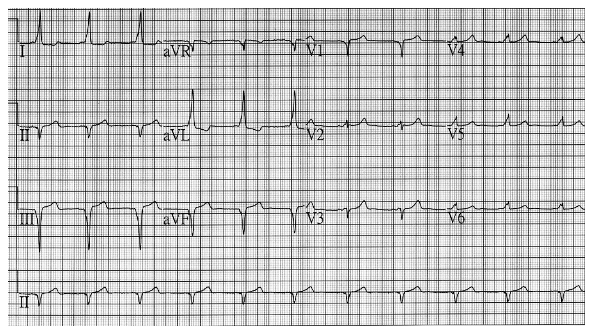
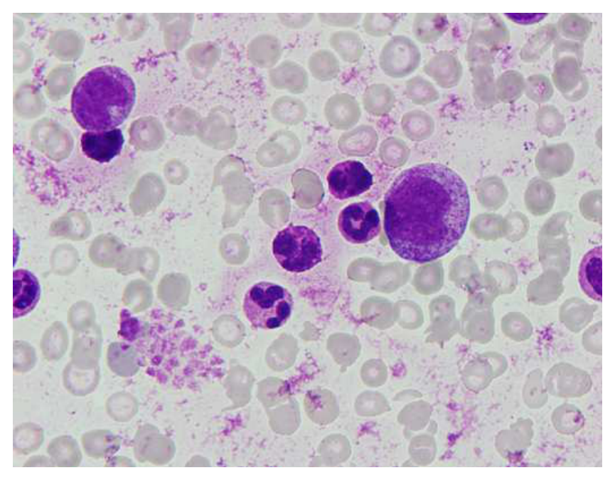
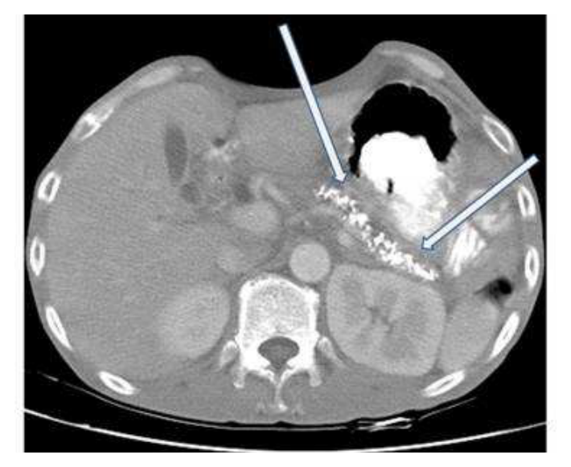

107 年第 2 次醫師醫學（三）（包括內科、家庭醫學科等科目及其相關臨床實例與醫學倫理）試題與答案
這一頁是民國 107 年第 2 次醫師醫學（三）（包括內科、家庭醫學科等科目及其相關臨床實例與醫學倫理）的整份歷屆試題，共 80 題，題目與標準答案出自考選部「國家考試試題及測驗式試題答案」開放資料，其中 80 題附有詳解。以下逐題列出題幹、選項與答案；要計時作答或記錄成績，請用線上練習。
考選部原始場次代碼：107080
線上作答這一科 →
全部 80 題
第 1 題
血陰離子隙（blood anion gap）是反應下列何項離子的多寡？
- （A）未測量之陽離子（unmeasured cations）
- （B）鈉離子+鉀離子（Na++ K+）
- （C）未測量之陰離子（unmeasured anions）
- （D）重碳酸離子+氯離子（HCO3-+ Cl-）
答案：（C）
詳解與考點
正解：陰離子隙（anion gap）用來估計未常規測量離子的差額。常用公式為 anion gap=Na+－（Cl-＋HCO3-）；血漿維持電中性，公式中未被列入的主要差額反映未測量之陰離子（unmeasured anions），故選 C。
A：未測量之陽離子也存在，但常用陰離子隙升高主要是在估計乳酸、酮酸、磷酸鹽或蛋白質等未測量陰離子的增加，故錯。
B：Na+ 與 K+ 是可直接測量的陽離子；它們不是陰離子隙所要反映的「未測量」離子，故錯。
D：HCO3- 與 Cl- 正是公式中已測量並被扣除的陰離子，並非陰離子隙代表的差額，故錯。
本題考點：陰離子隙（anion gap）——常以 Na+－（Cl-＋HCO3-）計算；未測量陰離子（unmeasured anions）——增加時可造成高陰離子隙代謝性酸中毒。
第 2 題
一位30歲女性病人尿液分析發現血尿，下列何項檢查結果支持是腎小球性（glomerular）血尿？
- （A）尿沉渣看見顆粒性圓柱體
- （B）24小時蛋白尿排泄量> 2.5克
- （C）尿沉渣發現變形性紅血球
- （D）紅血球數目> 50顆⁄高倍視野
答案：（C）
詳解與考點
正解：要判斷血尿是否來自腎小球。紅血球通過受損的腎小球基底膜與腎小管環境後會產生大小、形狀不一的變形性紅血球（dysmorphic red blood cells），因此尿沉渣看到變形性紅血球最支持腎小球性血尿，故選 C。
A：顆粒性圓柱體提示腎實質受損或腎小管病變，但不具腎小球性血尿的特異指向性，故錯。
B：大量蛋白尿可伴隨腎小球疾病，卻不是判定血尿來源最直接的尿沉渣證據；蛋白尿也可能有其他病因，故非最佳答案。
D：紅血球數目多只表示血尿較明顯，無法區分紅血球來自腎小球、腎盂輸尿管、膀胱或尿道，故錯。這個選項看似量化明確，卻缺乏來源定位能力。
本題考點：腎小球性血尿（glomerular hematuria）——變形性紅血球與紅血球圓柱體支持腎小球來源；尿沉渣（urine sediment）——比單純紅血球數目更能協助定位泌尿道出血來源。
第 3 題
一位35歲女性，因為最近血壓升高來就診。生化初步檢查都在正常值範圍內，除了血清鉀離子是2.5 mmol/L。下列那一個診斷最不可能考慮？
- （A）單側腎動脈狹窄（unilateral renal arterial stenosis）
- （B）服用甘草（licorice）
- （C）高登症候群（Gordon’s syndrome）
- （D）原發性皮質醛酮症（primary aldosteronism）
答案：（C）
詳解與考點
正解：高血壓合併低血鉀 2.5 mmol/L，代表須思考增加腎臟排鉀的礦物皮質素作用或腎素－醛固酮系統活化。單側腎動脈狹窄、甘草造成類礦物皮質素效應，以及原發性皮質醛酮症都可符合；高登症候群（Gordon’s syndrome）反而典型為高血壓合併高血鉀，故最不可能，選 C。
A：單側腎動脈狹窄會刺激腎素－血管張力素－醛固酮系統，造成高血壓與增加排鉀，因此可以考慮，故錯。
B：甘草會干擾皮質醇在腎臟的代謝，使其呈現礦物皮質素樣作用，可導致高血壓與低血鉀，故可以考慮。
D：原發性皮質醛酮症會增加鈉滯留與鉀排出，是高血壓合併低血鉀的典型鑑別診斷，故可以考慮。
本題考點：高血壓合併低血鉀（hypertension with hypokalemia）——優先考慮醛固酮過多、腎血管性高血壓與類礦物皮質素作用；高登症候群（Gordon’s syndrome）——又稱假性低醛固酮症第 2 型，典型是高血鉀而非低血鉀。
第 4 題
65歲男性因嘔吐不止兩天至急診處。病人過去有十二指腸潰瘍。身體診察，脈搏每分124次，血壓85/50mmHg，無貧血或黃疸。血清電解質（mmol/L）：Na+ 132，K+ 2.9，Cl- 85。動脈氣體分析如下：pH：7.49，PaCO2：47mmHg，PaO2：90 mmHg，HCO3-：32 mmol/L。下列有關對此病人的敘述何者最為正確？
- （A）血清滲透壓應該>310 mOsmol/kg H2O
- （B）尿液的鉀離子應該<10 mmol/L
- （C）尿液的滲透壓應該>500 mOsmol/kg H2O
- （D）尿液氯離子應該>20 mmol/L
答案：（C）
詳解與考點
正解：持續嘔吐、低血壓、低 Cl- 與代謝性鹼中毒。pH 7.49、HCO3- 32 mmol/L 顯示代謝性鹼中毒；預期代償 PaCO2 約為 40+0.7×（32-24）＝45.6 mmHg，實測 47 mmHg 可接受。病人因嘔吐與容積缺乏會活化抗利尿激素（ADH），使尿液濃縮，因此尿液滲透壓應高於 500 mOsmol/kg H2O，故選 C。
A：血清滲透壓主要受 Na+、葡萄糖與尿素氮影響；題目 Na+ 為 132 mmol/L 且未提供足以支持 >310 mOsmol/kg H2O 的資料，故不能如此推論。
B：容積缺乏時腎素－血管張力素－醛固酮系統上升，會促進腎臟排鉀；本例低血鉀不支持尿鉀必低於 10 mmol/L，故錯。
D：嘔吐造成的氯離子缺乏性代謝性鹼中毒常見尿氯偏低，因腎臟積極保留氯離子；尿氯 >20 mmol/L較不符合此病因，故錯。
本題考點：氯離子反應性代謝性鹼中毒（chloride-responsive metabolic alkalosis）——嘔吐造成 H+、Cl- 與容積流失；抗利尿激素（ADH）——容積缺乏時使尿液濃縮，尿滲透壓上升。
第 5 題
下列情況使用angiotensin-converting enzyme inhibitor（ACEI）比較容易發生急性腎衰竭，但何者例外？
- （A）雙側腎動脈狹窄
- （B）合併使用鈣離子阻斷劑
- （C）使用大量利尿劑治療鬱血性心衰竭
- （D）合併使用非類固醇消炎劑
答案：（B）
詳解與考點
正解：ACEI 何時較容易引起急性腎衰竭的「例外」。ACEI 擴張腎絲球輸出小動脈（efferent arteriole），在腎灌流依賴血管張力素 II 維持時會使腎絲球過濾壓下降；鈣離子阻斷劑本身不會造成這種腎臟血流動力學的雙重打擊，因此是例外，故選 B。
A：雙側腎動脈狹窄時兩側腎臟均仰賴血管張力素 II 收縮輸出小動脈維持過濾壓，使用 ACEI 後可能使腎功能急遽惡化，故非例外。
C：大量利尿劑可能造成有效循環容積不足；再使用 ACEI 會降低輸出小動脈張力，使腎絲球過濾壓更低，故容易發生急性腎損傷。
D：非類固醇消炎劑（NSAIDs）抑制前列腺素，使輸入小動脈收縮；合併 ACEI 的輸出小動脈擴張，會同時降低腎絲球灌流壓，故非例外。
本題考點：ACEI 腎臟血流動力學（renal hemodynamics of ACE inhibitors）——擴張輸出小動脈、降低腎絲球內壓；急性腎損傷風險（acute kidney injury risk）——腎動脈狹窄、低容積與 NSAIDs 都會使腎灌流更依賴血管張力素 II。
第 6 題
下列那一個病例較符合所列之動脈血氣體分析和血清電解質的檢查結果［pH：7.32，PaO2：110 mmHg，PaCO2：33 mmHg，HCO3-：18；Na+ 138，K+ 3.0，Cl- 109（電解質的單位是mmol/L）］？
- （A）19歲女學生為第一型糖尿病，因期末考熬夜兩天，忘記注射胰島素
- （B）39歲女性經理服用作用於遠端腎小管之利尿劑減重
- （C）59歲女性有第五期慢性腎臟病
- （D）69歲女性腹瀉三天
答案：（D）
詳解與考點
正解：先判讀酸鹼與陰離子隙。pH 7.32 為酸血症，HCO3- 18 mmol/L 降低，故為代謝性酸中毒；預期 PaCO2 約為 1.5×18+8=35 mmHg，實測 33 mmHg 接近適當呼吸代償。陰離子隙＝138－(109+18)＝11，屬正常陰離子隙代謝性酸中毒，且 K+ 3.0 mmol/L 偏低，最符合腹瀉流失 HCO3- 與 K+，故選 D。
A：第一型糖尿病未打胰島素容易發生糖尿病酮酸中毒，通常是高陰離子隙代謝性酸中毒；本題陰離子隙為 11，不符。
B：作用於遠端腎小管的利尿劑常造成低血鉀與代謝性鹼中毒，而本題 HCO3- 降低、呈酸中毒，故錯。
C：第五期慢性腎臟病可造成代謝性酸中毒，但常見未測量陰離子累積與高血鉀傾向；本題正常陰離子隙合併低血鉀，更不符合。
本題考點：正常陰離子隙代謝性酸中毒（normal anion gap metabolic acidosis）——常由 HCO3- 流失或腎小管酸化異常造成；腹瀉（diarrhea）——腸道流失 HCO3- 與 K+，可造成酸中毒合併低血鉀。
第 7 題
關於kwashiorkor malnutrition的敘述，何者最不適當？
- （A）是長期飢餓的結果（starvation-related malnutrition）
- （B）身體診察可能發現水腫、頭髮容易拔出（easy hair pluckability）
- （C）實驗室檢查可能發現血清白蛋白低（＜2.8 g/dL）、血液淋巴球減少（lymphocytes＜1,500/µL）
- （D）Body mass index仍在正常範圍
答案：（A）
詳解與考點
正解：kwashiorkor 為蛋白質嚴重不足所致的營養不良，而非單純長期總熱量飢餓。長期飢餓較典型的是 marasmus；kwashiorkor 常在熱量來源尚有但蛋白質不足時發生，故（A）最不適當，選 A。
B：蛋白質不足造成低白蛋白血症與組織變化，可出現水腫、毛髮脆弱且容易拔出等表徵，故此項符合 kwashiorkor，非答案。
C：kwashiorkor 可見低白蛋白血症與免疫功能受損，血液淋巴球減少亦可反映蛋白質營養不良，故此項適當。
D：水腫會掩蓋實際體重與消瘦程度，因此 Body mass index 可能仍落在看似正常的範圍；這個選項看似與嚴重營養不良矛盾，卻正是水腫造成的判讀陷阱，故非答案。
本題考點：kwashiorkor（protein-deficient malnutrition）——以蛋白質不足、低白蛋白與水腫為特徵；marasmus（starvation-related malnutrition）——以長期總熱量不足與明顯消瘦為主，須與 kwashiorkor 區分。
第 8 題
一位65歲男性糖尿病患，最近剛在門診治療肺結核，追蹤抽血結果卻發現異常：total bilirubin 3 mg/dL（正常值：0.2～1.2）、direct bilirubin 0.3 mg/dL（正常值：0～0.4）。下列敘述何者最不適當？
- （A）可能與肺結核藥物引發溶血有關
- （B）病患此時驗尿將發現urine bilirubin呈陽性反應
- （C）病患此時驗尿將發現urine urobilinogen呈陽性反應
- （D）病患此時驗血中的糖化血色素（HbA1C），會有假性偏低的可能
答案：（B）
詳解與考點
正解：total bilirubin 3 mg/dL 升高而 direct bilirubin 0.3 mg/dL 正常，表示以非結合型膽紅素（unconjugated bilirubin）升高為主。非結合型膽紅素不溶於水，不能經腎絲球過濾進入尿液，因此尿液 bilirubin 應為陰性；稱其會呈陽性反應最不適當，故選 B。
A：溶血會增加血中非結合型膽紅素；部分抗結核藥物可造成溶血或肝膽異常，故在此檢驗型態下可列入鑑別，並非最不適當。
C：溶血時進入腸道的膽紅素代謝增加，尿液 urobilinogen 可增多並呈陽性，與非結合型高膽紅素血症的方向相符。
D：若存在溶血，紅血球壽命縮短，累積糖化的時間減少，HbA1c 可能假性偏低；這是看似與黃疸無關、其實由溶血共同造成的誘答。
本題考點：高膽紅素血症（hyperbilirubinemia）——非結合型膽紅素不溶於水，尿液 bilirubin 陰性；溶血（hemolysis）可使尿液 urobilinogen 增加，並使 HbA1c 假性偏低。
第 9 題
有關感覺之神經學檢查，下列那一項描述最正確？
- （A）以針刺（pinprick）檢查痛感（pain），所檢查的神經纖維為大神經
- （B）以棉花縷（cotton wisp）檢查觸感（touch），所檢查的神經纖維為大神經及小神經
- （C）以音叉（tuning fork）檢查震動感覺（vibration），所檢查的神經纖維為小神經
- （D）以特定關節之被動移動（passive movement of specific joints）檢查關節位置（joint position），所檢查的神經纖維為小神經
答案：（B）
詳解與考點
正解：感覺檢查需依感覺型態辨識周邊神經纖維。棉花縷輕觸皮膚所測的觸覺（touch）可由大型有髓鞘纖維與小型纖維相關傳入路徑共同參與，故（B）「大神經及小神經」最正確。
A：針刺測痛覺（pinprick）主要評估小直徑纖維，包括薄髓鞘 Aδ 纖維與無髓鞘 C 纖維；其傳導較慢，並非大神經纖維主導，故錯。
C：音叉檢查震動覺（vibration）主要依賴大型有髓鞘 Aβ 纖維及後索傳導路徑；小纖維病變早期通常較影響痛覺與溫度覺，非震動覺，故錯。
D：特定關節的被動移動檢查關節位置覺（joint position）主要評估本體覺（proprioception），由大型有髓鞘感覺纖維傳入並經後索系統上行；小纖維不是其主要傳入纖維，故錯。
本題考點：小纖維神經病變（small-fiber neuropathy）主要影響痛覺與溫度覺；大型有髓鞘纖維（large myelinated fibers）主要傳遞震動覺、本體覺及部分觸覺；感覺神經學檢查（sensory neurological examination）須將刺激方式對應至所評估的纖維與傳導路徑。
第 10 題
高血鈣急症的治療原則下列那一項最不適當？
- （A）立即補充生理食鹽水
- （B）使用thiazide類利尿劑
- （C）惡性腫瘤引發高血鈣可以考慮給予雙磷酸鹽（bisphosphonates）
- （D）維生素D造成的高血鈣症可以考慮使用類固醇治療
答案：（B）
詳解與考點
正解：「高血鈣急症」；處置先擴充血管內容量並增加鈣排出，而 thiazide 類利尿劑會增加腎小管鈣再吸收、使血鈣更高，故最不適當的是 B。
A：高血鈣常造成腎性尿崩樣多尿與脫水，先給生理食鹽水恢復循環血量並增加尿鈣排泄，是合理的初始處置。
C：惡性腫瘤相關高血鈣可使用雙磷酸鹽（bisphosphonates）抑制骨吸收，屬降低血鈣的重要治療。
D：維生素 D 過多造成的高血鈣可考慮類固醇，以減少腸道鈣吸收及活性維生素 D 的作用，並非不適當。
本題考點：高血鈣症（hypercalcemia）急症——先以等張食鹽水矯正脫水；thiazide diuretics 增加鈣再吸收而可能惡化高血鈣；惡性腫瘤相關高血鈣可用 bisphosphonates。
第 11 題
有關胸痛的鑑別診斷與描述，下列那一項最不適當？
- （A）章魚壺心肌症（Takotsubo cardiomyopathy）通常以突然發作的胸痛或呼吸急促表現
- （B）氣胸（pneumothorax）的風險因素包括男性、抽菸、家族病史等
- （C）心包炎（pericarditis）引起的胸痛在平躺時改善，坐起或身體前傾時加劇
- （D）使用硝酸甘油（nitroglycerin）可能改善食道痙攣（esophageal spasm）所引起的胸痛
答案：（C）
詳解與考點
正解：心包炎胸痛的姿勢變化。急性心包炎（pericarditis）在平躺時通常加劇，坐起並身體前傾時減輕；選項將方向完全顛倒，故最不適當的是 C。
A：章魚壺心肌症（Takotsubo cardiomyopathy）常在強烈身心壓力後，以突發胸痛或呼吸急促表現，並可模仿急性冠心症，敘述適當。
B：自發性氣胸的危險因子包括男性、吸菸與家族病史等，這些因素與肺泡下小囊泡破裂風險相關。
D：硝酸甘油可鬆弛平滑肌，可能改善食道痙攣（esophageal spasm）的胸痛；它看似專屬心絞痛，但對食道平滑肌亦可能有效。
本題考點：急性心包炎（acute pericarditis）——胸痛常因平躺、深呼吸或咳嗽加劇，坐起前傾可減輕；胸痛鑑別須涵蓋心臟、肺部與食道原因。
第 12 題
有關老年病人的評估，下列敘述何者正確？
- （A）Mini-Mental State Examination主要用來篩檢憂鬱症（depression）
- （B）Mini-Cog test包括「倒背數字」與「系列減法」兩部分
- （C）Timed up-and-go test用於評估行走與平衡能力
- （D）備餐、沐浴、移位、服藥等能力皆是基本日常生活活動功能（basic activities of daily living）的評估項目
答案：（C）
詳解與考點
正解：老年評估中各工具的用途。Timed up-and-go test 要求受試者起身、行走、轉身後坐回，用來評估行走、動態平衡與跌倒風險，故 C 正確。
A：Mini-Mental State Examination（MMSE）主要篩檢整體認知功能，例如定向感、記憶與注意力；憂鬱症的篩檢須用其他量表，故錯。
B：Mini-Cog test 結合三詞記憶與畫時鐘測驗，不是「倒背數字」與「系列減法」兩部分；後兩者較屬認知檢查中的注意力項目。
D：備餐與服藥屬工具性日常生活活動（instrumental activities of daily living, IADL），沐浴與移位才是基本日常生活活動（ADL）；將它們全歸為基本 ADL 錯誤。
本題考點：老年整合性評估（geriatric assessment）——Timed up-and-go test 評估步態與平衡；MMSE 評估認知；ADL 與 IADL 應依生活功能複雜度區分。
第 13 題
下列何者並非動脈硬化獨立的危險因子？
- （A）低密度脂蛋白（LDL cholesterol）過高
- （B）吸菸
- （C）肥胖
- （D）糖尿病
本題送分，無標準答案
詳解與考點
本題經考選部公告一律給分。傳統上(A)LDL過高、(B)吸菸、(D)糖尿病均列為動脈硬化之獨立危險因子，而(C)肥胖之效應多經由血脂異常、糖尿病及高血壓等中介，故傳統教材認為肥胖非「獨立」危險因子；惟AHA等現行指引已將肥胖本身列為獨立心血管危險因子，兩派見解不一致，致(C)是否為正解出現爭議。作答以現行內科學與心臟學教材對危險因子分類之界定為準。
第 14 題
王先生今年54歲，胸悶及喘的症狀已有一年。他有家族遺傳的高血壓、糖尿病，而且一天抽兩包菸已有30年，還曾被診斷為慢性阻塞性肺病（COPD）。下列針對他可能合併冠心病之敘述，何者正確？
- （A）若他雖仍能正常上班工作及活動，但吃飽後走上坡就會胸悶，則他的Canadian Cardiovascular Society功能分級為III級
- （B）因為考慮壓力性測試（stress testing）的風險，應避免運動心電圖檢查
- （C）多巴胺壓力（dobutamine stress）心臟超音波檢查雖然相當準確，但敏感度（sensitivity）略低於運動心電圖
- （D）電腦斷層檢查冠心病之正確性雖然頗高，但其對預測疾病預後之應用尚不明確
答案：（D）
詳解與考點
正解：冠心病檢查的「診斷正確性」與「預後預測」要分開看。冠狀動脈電腦斷層血管攝影對解剖性狹窄的診斷正確性高，但此題脈絡下對長期預後分層的定位較不明確，故 D 正確。
A：仍能工作活動、僅在吃飽後走上坡才胸悶，表示症狀在較大活動量才出現，較接近 Canadian Cardiovascular Society II 級，不是日常生活明顯受限的 III 級。
B：病人雖有 COPD，但若可運動且無運動禁忌，運動心電圖仍可作為評估方式；不能僅因考慮風險就一概避免。
C：dobutamine stress 心臟超音波是無法運動者常用的壓力影像檢查，其敏感度不應概括說略低於運動心電圖；它看似因非運動方式較弱，實際上影像檢查可提高缺血偵測能力。
本題考點：穩定型冠心病（stable coronary artery disease）評估——運動能力、基礎心電圖與禁忌症決定壓力測試選擇；解剖性冠狀動脈影像與功能性缺血、預後資訊不可混為一談。
第 15 題
對於心電圖心軸偏左（left axis deviation）的可能原因，何者錯誤？
- （A）左右手導程顛倒（reversal of the left and right arm electrodes）
- （B）可見於正常人（normal variant）
- （C）左心室肥厚（left ventricular hypertrophy）
- （D）下壁心肌梗塞（inferior myocardial infarction）
答案：（A）
詳解與考點
正解：「心軸偏左」的真實原因。左右手肢體導程接反會造成肢體導程的左右翻轉，常模擬右軸偏移而非左軸偏移，因此 A 為錯誤敘述。
B：部分正常人可有輕度左軸偏移，尤其年長者或體型因素造成心臟位置改變時，故可為正常變異。
C：左心室肥厚（left ventricular hypertrophy）可伴隨左前分支傳導異常或心臟電軸向左，為左軸偏移的可能原因。
D：下壁心肌梗塞（inferior myocardial infarction）若影響傳導系統，可能合併左前分支阻滯而出現左軸偏移，故不能排除。
本題考點：心電圖心軸（electrocardiographic axis）——左軸偏移可見於左前分支阻滯、左心室肥厚與下壁心肌梗塞；肢體導程接反會造成特定假象，須先辨識技術性錯誤。
第 16 題
一位44歲女性因心悸至門診檢查，心電圖顯示如下圖，其附屬路徑或旁道（accessory pathway）最可能位在何處？

- （A）右心室側壁（Right free wall）
- （B）左心室側壁（Left lateral ventricle）
- （C）前中膈（Anterior septum）
- （D）後中膈（Posterior septum）
答案：（D）
詳解與考點
正解：心電圖可見下壁導程（II、III、aVF）起始向量呈明顯負向，表示心室的早期去極化由下往上進行；同時 V1 的 QRS 起始亦偏負向。這種 delta wave 與 QRS 軸向的組合最符合後中膈副傳導路徑（posterior septal accessory pathway），故選 D。
A：右心室側壁副傳導路徑的早期心室活化通常由右向左，常使 V1 的起始向量較偏正向；本圖 V1 以負向波形為主，且下壁導程呈明顯負向，不符合右側壁位置。
B：左心室側壁副傳導路徑常造成 I、aVL 導程的起始向量偏負向，因早期活化由左側向右側傳遞；本圖 I 導程起始與主要 QRS 波形偏正向，與左側壁旁道不符。
C：前中膈副傳導路徑的早期活化方向較偏向下方，較不會形成 II、III、aVF 如圖所示一致而顯著的負向起始向量；本圖的上向活化軸更支持後中膈而非前中膈。
本題考點：預激症候群（pre-excitation syndrome）的副傳導路徑定位；delta wave 反映經旁道提早活化的心室部位；下壁導程負向的早期去極化向量提示活化由下往上，支持後中膈（posterior septum）旁道。
第 17 題
在成人最常見的三尖瓣逆流（tricuspid regurgitation）原因為何？
- （A）肺動脈高壓（pulmonary hypertension）
- （B）類癌（carcinoid）
- （C）愛伯斯坦氏異常（Ebstein’s anomaly）
- （D）心內膜炎（endocarditis）
答案：（A）
詳解與考點
正解：成人最常見的三尖瓣逆流多屬功能性逆流。肺動脈高壓使右心室壓力負荷增加、右心室與三尖瓣環擴張，瓣葉雖未必原發病變仍無法密合，因此 A 最常見。
B：類癌（carcinoid）可造成右心瓣膜纖維化與三尖瓣逆流，但屬較少見的特定病因。
C：愛伯斯坦氏異常（Ebstein’s anomaly）是先天性三尖瓣位置與結構異常，可造成逆流，但不是成人整體最常見原因。
D：心內膜炎（endocarditis）可破壞三尖瓣而導致逆流，特別在特定高風險族群；它看似直接傷及瓣膜，卻不如肺高壓相關功能性逆流常見。
本題考點：三尖瓣逆流（tricuspid regurgitation）——成人最常見為繼發性或功能性逆流，常由肺動脈高壓、右心室擴張與瓣環擴張造成；原發瓣膜病變是較少見原因。
第 18 題
有關主動脈瓣狹窄，下列敘述何者錯誤？
- （A）當有心衰竭症狀時，建議接受主動脈瓣膜置換
- （B）當出現心衰竭症狀時，預期餘命大約是3年
- （C）鈣化性主動脈瓣狹窄，每年主動脈瓣膜面積大約下降0.1平方公分
- （D）大約有兩成猝死病人是因心律不整死亡
答案：（B）
詳解與考點
正解：有心衰竭症狀的嚴重主動脈瓣狹窄預後。症狀出現後若未矯治，心衰竭的存活期通常遠短於 3 年，選項 B 把常見的不同症狀期預後混用，故為錯誤敘述。
A：症狀性嚴重主動脈瓣狹窄合併心衰竭時，主動脈瓣置換可改善症狀與存活，是合理建議。
C：鈣化性主動脈瓣狹窄可隨時間進展，瓣膜面積平均每年約減少 0.1平方公分是常用的概略描述，敘述適當。
D：主動脈瓣狹窄病人的猝死可由心律不整等機轉造成；但「大約兩成」須有明確的死亡病人分母、收案族群與研究脈絡才能判讀，題幹未提供，不能僅由可能的死亡機轉證成此比例。
本題考點：主動脈瓣狹窄（aortic stenosis）——症狀性嚴重疾病預後不佳，尤其出現心衰竭後；瓣膜置換是改變病程的主要治療，症狀類型與未治療存活期須分別記憶。
第 19 題
一位23歲大學王姓女畢業生規劃去位於菲律賓首都馬尼拉的貿易公司上班，在出發前兩週，因平常有過敏性鼻炎而先自行到住家附近的李姓家醫科診所拿藥。醫師問病史時王女除了提到鼻塞、流鼻水外，還表示偶而會有胸悶的症狀，但並無其他任何不適。而醫師在作身體診查時聽診前胸，發現有grade 1-2的mid-systolicmurmur，於是醫師要王女轉診去附近的區域醫院作進一步檢查。王女到了區域醫院的心臟科門診就診，在問診確定病史和身體診查發現如同轉診單所記載後，其最合適的處置為：
- （A）直接安排做心臟超音波檢查，再決定如何處置
- （B）直接安排做ECG檢查，如無異常，即可不用再做其他檢查
- （C）直接安排做CXR檢查，如無異常，再做心臟超音波檢查，之後再決定如何處置
- （D）直接安排做ECG和CXR檢查，如無異常，即可不用再做其他檢查
答案：（D）
詳解與考點
正解：官方答案為 D。惟 grade 1–2 mid-systolic murmur 合併胸悶，不能只因雜音低度便預設為無害性雜音；依現行檢查適切性觀點，症狀本身可構成經胸心臟超音波的理由，正常 ECG 與胸部 X 光（CXR）也不能排除結構性瓣膜病。本題較像以舊題或特定教材將其判為低風險雜音的作答框架，故依官方答案選 D。
A：直接安排心臟超音波可評估瓣膜與其他結構性心臟病；在合併胸悶時，這個選項具有充分的現行臨床理由，正是本題答案唯一性的爭點。
B：ECG 正常只能降低部分心律與缺血疑慮，不能排除結構性心臟病；僅做 ECG 後停止檢查不足。
C：先做 CXR 再一律加做心臟超音波未必是唯一的檢查路徑；重點在胸悶與雜音是否需要超音波評估，而不是以正常 CXR 作為是否檢查的唯一門檻。
本題考點：心雜音（heart murmur）評估——雜音強度、型態與症狀都會影響經胸心臟超音波（transthoracic echocardiography）的適應性；正常 ECG 與 CXR 不能單獨排除瓣膜性心臟病。
第 20 題
有關發紺（cyanosis）的敘述，下列何者錯誤？
- （A）大的patent ductus arteriosus（PDA）引起的差異性發紺（differential cyanosis），經常是下半身發紺
- （B）周邊血管疾病引起的發紺部位，經常是在動脈血管管腔狹窄處的下游處
- （C）代表的生理意義為血氧含量降低，或是組織的灌注血流量不足
- （D）嚴重心衰竭引起的發紺，常伴有小血管的擴張
答案：（D）
詳解與考點
正解：嚴重心衰竭造成周邊發紺的微循環改變。低心輸出時交感神經活化，皮膚與周邊小血管以收縮來維持重要器官灌流，不是小血管擴張，故 D 錯誤。
A：大型 patent ductus arteriosus（PDA）若進展至肺高壓與右向左分流，去氧血流進入降主動脈，常造成下半身較明顯的差異性發紺。
B：周邊動脈狹窄使狹窄遠端血流與氧供應不足，發紺常見於該血管供應範圍的下游。
C：發紺可由動脈血氧含量下降造成，也可因組織灌流變慢、去氧血紅素增加而出現，敘述正確。
本題考點：發紺（cyanosis）——中央性發紺主要反映血氧飽和度下降；周邊性發紺常與低心輸出或血管收縮、組織血流不足有關；PDA 右向左分流可造成差異性發紺。
第 21 題
有關次發性高血壓的敘述，何者正確？
- （A）腎血管狹窄引起的血壓高是所有次發性高血壓裡面最常見的
- （B）腎動脈發生纖維肌肉發育異常（Fibromuscular dysplasia）或是動脈硬化形成斑塊，引起血管狹窄，造成血壓高
- （C）腎上腺腫瘤製造過多的Aldosterone也是造成次發性高血壓的原因，表現常是：鈉堆積，高血壓，高血鉀，低的血中腎素（Renin）活性
- （D）嗜鉻細胞瘤（Pheochromocytoma）有80%的機會是來自家族遺傳，屬於自體顯性（Autosomaldominant）遺傳
答案：（B）
詳解與考點
正解：腎血管性高血壓的病因。腎動脈纖維肌肉發育異常（fibromuscular dysplasia）及動脈粥樣硬化斑塊都能使腎動脈狹窄，啟動腎素—血管張力素系統而升高血壓，故 B 正確。
A：原發性高血壓最常見；在次發性高血壓中，腎實質疾病通常比腎血管狹窄更常見，故錯。
C：原發性醛固酮增多症會有鈉滯留、高血壓與低腎素活性，但典型電解質方向是低血鉀，不是高血鉀。
D：嗜鉻細胞瘤多為散發性，雖可與遺傳性症候群相關，不能說有 80% 來自家族遺傳。
本題考點：次發性高血壓（secondary hypertension）——腎動脈狹窄可由動脈粥樣硬化或 fibromuscular dysplasia 造成；原發性醛固酮增多症常見低腎素與低血鉀；嗜鉻細胞瘤多非家族性。
第 22 題
黃疸是臨床上常的症狀。有一個20 歲年輕男性，無任何肝臟病史，門診主訴例行健康檢查中，發現血清Bilirubin 2.9/0.5 ㎎/dL（Total/Direct, reference value:＜1.0/＜0.3 mg/dL），其他肝功能檢查都正常，血清肝炎標誌都是陰性反應；理學檢查無ʳ常，沒有搔癢症狀。下列何種診斷最有可能？
- （A）肝內膽汁滯留（Cholestasis）
- （B）Dubin-Johnson Syndrome
- （C）Gilbert's Syndrome
- （D）Rotor Syndrome
本題送分，無標準答案
詳解與考點
本題官方公告送分。
第 23 題
有關B型肝炎病毒的變異（variants），下列何者錯誤？
- （A）核前區G1896A變異與e抗原陰性有關，較不會出現在基因型A的B型肝炎病毒
- （B）表面抗原145氨基酸glycine變異成arginine的B型肝炎病毒，會出現在表面抗體（anti-HBs）陽性的個案中
- （C）Core-promoter的變異，可以導致病毒複製增加及快速進展肝硬化
- （D）B型肝炎聚合酶YMDD區的變異，與自然演化有關
答案：（D）
詳解與考點
正解：官方答案為 D。YMDD 變異的經典考點是核苷類似物，特別是 lamivudine，造成的選擇壓力與抗藥性；因此舊題多預期把（D）與治療相關抗藥性區分，故選 D。惟未接受治療的慢性 HBV 感染者也可有自然發生的 YMDD 變異，將（D）按字面一概判為錯誤有爭議。
A：precore G1896A 變異可阻止 HBeAg 產生，且因基因型 A 的序列背景，較不易形成此變異，敘述適當。
B：表面抗原 G145R 變異可改變抗原決定位，產生免疫逃脫，因而可在 anti-HBs 陽性的個案中發現。
C：core-promoter 變異可影響病毒複製與 HBeAg 表現，並與較活躍疾病及肝硬化快速進展相關。
本題考點：B 型肝炎病毒變異（hepatitis B virus variants）——precore 與 basal core promoter 變異影響 HBeAg 與病毒複製；HBsAg G145R 是免疫逃脫變異；YMDD 變異是 lamivudine 抗藥性的典型機轉，但治療前自然變異亦可存在。
第 24 題
Child Pugh score是用來評估肝硬化嚴重的方式，Child Pugh score的組成共有5個項目，這5個項目是：
- （A）Albumin, bilirubin, prothrombin time, ascites, encephalopathy
- （B）Albumin, bilirubin, ALT （Alanine Aminotransferase）, ascites, encephalopathy
- （C）Albumin, bilirubin, ALT （Alanine Aminotransferase）, prothrombin time, ascites
- （D）Albumin, bilirubin, prothrombin time, ALT （Alanine Aminotransferase）, encephalopathy
答案：（A）
詳解與考點
正解：Child-Pugh score 的固定五項組成。它以 albumin、bilirubin、prothrombin time 或 INR、ascites 與 encephalopathy 評估肝硬化嚴重度；A 完整列出五項，故選 A。
B：ALT 反映肝細胞受損，但不是 Child-Pugh score 項目；此選項又漏列凝血功能指標，故錯。
C：此選項雖有 prothrombin time 與 ascites，卻以 ALT 取代 encephalopathy；意識與神經精神狀態是該分數的必要項目。
D：此選項包含 encephalopathy 與 prothrombin time，但以 ALT 取代 ascites；腹水是門脈高壓與肝功能失代償的重要臨床指標。
本題考點：Child-Pugh score——以 albumin、bilirubin、凝血功能（prothrombin time/INR）、ascites、hepatic encephalopathy 五項評估肝硬化嚴重度；ALT 不屬於該評分。
第 25 題
以下關於大腸直腸癌篩檢之敘述，何者正確？
- （A）一旦診斷發炎性腸道疾病（inflammatory bowel disease），就要每1至3年施行一次大腸鏡
- （B）一般危險性族群，每1至2年以免疫法糞便潛血檢查篩檢是一個篩檢的好方式
- （C）一旦診斷有腺瘤性息肉並切除後，應每年追蹤大腸鏡
- （D）有一等親大腸癌家族史者，應從50歲開始每5年做一次大腸鏡
答案：（B）
詳解與考點
正解：一般危險性族群的篩檢方式。免疫法糞便潛血檢查（fecal immunochemical test, FIT）為非侵入性、可重複執行的有效篩檢工具，每 1至2年施作是合理方式，故 B 正確。
A：發炎性腸道疾病的監測大腸鏡間隔須看病程長度、疾病範圍與其他風險因子，不能在剛診斷時一律每 1至3年施作。
C：腺瘤切除後的大腸鏡追蹤間隔依息肉數目、大小、病理與切除完整性決定，並非所有人都要每年追蹤。
D：一等親大腸癌家族史者的開始年齡與間隔須依親屬診斷年齡及家族風險調整，不能一概從 50歲開始每 5年一次；它看似遵循一般篩檢年齡，卻忽略家族史會改變策略。
本題考點：大腸直腸癌篩檢（colorectal cancer screening）——一般風險族群可用 FIT 定期篩檢；腺瘤切除後、發炎性腸道疾病及家族史者的追蹤應風險分層，不能套用單一固定間隔。
第 26 題
關於Ulcerative colitis及Crohn's disease的比較，下列何者正確？
- （A）在內視鏡下，ulcerative colitis常有rectal sparing的現象，Crohn's disease則較罕見
- （B）在內視鏡下，ulcerative colitis常有cobblestoning的黏膜變化，Crohn's disease則較罕見
- （C）在放射線檢查下，ulcerative colitis不會呈現segmental colitis的現象，而Crohn's disease常會有此現象的發生
- （D）在臨床理學檢查下，ulcerative colitis常見significant perineal disease的症狀，而Crohn's disease罕有此症狀的發生
答案：（C）
詳解與考點
正解：ulcerative colitis 與 Crohn’s disease 的病灶分布。ulcerative colitis 通常自直腸起連續向近端延伸，不呈典型節段性病灶；Crohn’s disease 可有 skip lesions 與節段性腸炎，故 C 正確。
A：rectal sparing 較可見於 Crohn’s disease，ulcerative colitis 典型上會侵犯直腸，敘述顛倒。
B：cobblestoning 是 Crohn’s disease 的典型內視鏡黏膜外觀，ulcerative colitis 通常呈連續性發炎與表淺潰瘍，敘述錯誤。
D：明顯肛周病變如瘻管、膿瘍較常見於 Crohn’s disease，而非 ulcerative colitis；這是兩者臨床鑑別的重要線索。
本題考點：發炎性腸道疾病（inflammatory bowel disease）——ulcerative colitis 多為直腸起始的連續性結腸炎；Crohn’s disease 可呈節段性 skip lesions、cobblestoning 與肛周病變。
第 27 題
Helicobacter pylori infection業已證實為消化性潰瘍的主因，關於此細菌的特性，下列敘述何者正確？
- （A）Helicobacter pylori infection會造成10～15%的感染者產生慢性胃炎，這些患者少數會發生消化性潰瘍或胃癌
- （B）Helicobacter pylori會分泌catalase，會產生NH3來中和胃酸，因此細菌得以於胃酸中存活
- （C）不同strain的Helicobacter pylori可能帶有不同的毒性因子，如pathogenicity island（cag-PAI）會encode毒性因子Cag A，它們會造成人體宿主較強的黏膜發炎反應
- （D）Helicobacter pylori infection的outcome除了bacterial virulent factor之外，也與host factor有關，若兩者交互作用造成antrum-predominant胃炎，感染者的胃萎縮及胃癌的風險關聯性較大；若造成corpus-predominant胃炎，感染者的十二指腸潰瘍的風險較大，而與胃癌的風險關聯性較小
答案：（C）
詳解與考點
正解：不同 Helicobacter pylori 菌株的毒力差異。cag pathogenicity island（cag-PAI）可編碼 CagA 等毒力因子，帶有這類因子的菌株通常引起較強的胃黏膜發炎反應，故 C 正確。
A：H. pylori 感染者大多會有慢性胃炎，並非只有 10～15%；其中少部分才會發生消化性潰瘍或胃癌，故前段比例錯誤。
B：產生 NH3 中和局部胃酸的主要酵素是 urease，不是 catalase；catalase 的功能是處理氧化壓力，故錯。
D：antrum-predominant 胃炎較與十二指腸潰瘍相關；corpus-predominant 或多灶性萎縮性胃炎較與胃萎縮、胃癌相關，選項將兩者關聯顛倒。
本題考點：Helicobacter pylori——urease 產生氨以利胃內存活；cag-PAI/CagA 是重要毒力因子；胃炎分布會影響十二指腸潰瘍與胃癌風險。
第 28 題
關於痛風（gout）和急性痛風性關節炎（acute gouty arthritis）的治療，下列敘述何者錯誤？
- （A）急性痛風性關節炎如果不治療也可在3至10天內自然緩解
- （B）治療急性痛風性關節炎時，如合併使用colchicine和降尿酸的藥物（例如allopurinol），會有最好的消炎效果
- （C）使用allopurinol治療痛風時，病人如果帶有HLA-B*5801基因，則產生嚴重皮膚過敏反應的機率比不帶此基因的機率高很多
- （D）Febuxostat是一種xanthine oxidase inhibitor，在腎臟功能不全的病人也可使用
答案：（B）
詳解與考點
正解：急性痛風性關節炎的抗發炎治療與長期降尿酸治療不同。colchicine 用於急性期抗發炎，allopurinol 是長期降尿酸藥，兩者合併不會因此有「最好的消炎效果」；B 混淆治療目標，故錯。
A：急性痛風性關節炎即使未治療，發作通常可在數天至約 10天內自然緩解，敘述適當。
C：HLA-B*5801 與 allopurinol 相關嚴重皮膚不良反應有強關聯，帶有此基因者風險顯著較高。
D：febuxostat 是 xanthine oxidase inhibitor，可用於腎功能不全者，但仍須依個別腎功能、共病與藥物安全性評估；選項所述原則正確。
本題考點：痛風（gout）治療——急性發作以抗發炎藥物控制症狀；allopurinol 與 febuxostat 屬長期 urate-lowering therapy；HLA-B*5801 與 allopurinol severe cutaneous adverse reactions 相關。
第 29 題
有關復發性多軟骨炎（relapsing polychondritis）的敘述，下列何者正確？
- （A）大部分病人會有類風濕因子（rheumatoid factor）陽性
- （B）大多數的病人會合併關節炎
- （C）大約有90%的病人會合併其他自體免疫疾病
- （D）治療以抗腫瘤壞死因子（anti-TNF）生物製劑為主
答案：（B）
詳解與考點
正解：復發性多軟骨炎的常見系統性表現。此病除耳、鼻、呼吸道軟骨反覆發炎外，非侵蝕性關節炎或關節痛很常見，因此 B 正確。
A：類風濕因子（rheumatoid factor）可在少數病人陽性，但不是大部分病人的典型血清學表現，故錯。
C：復發性多軟骨炎可合併其他自體免疫或血液疾病，但不能說約 90% 都會合併，比例過高。
D：治療依器官受累與嚴重度使用抗發炎藥、類固醇及必要時免疫抑制治療；anti-TNF 生物製劑不是普遍的主要治療。
本題考點：復發性多軟骨炎（relapsing polychondritis）——為反覆侵犯軟骨的發炎性疾病，可累及耳、鼻、氣道與關節；關節炎常見，但類風濕因子陽性與其他自體免疫疾病合併均非大多數病人的必然表現。
第 30 題
30歲女性主訴近半年來口乾眼乾越來越嚴重，即使每天喝很多水也無法改善，眼科醫師經過Schirmer's test之後確認為乾眼症，轉介至風濕免疫科門診。下列何種處置比較恰當？
- （A）直接使用高劑量類固醇治療
- （B）直接使用Cyclophosphamide治療
- （C）直接使用Rituximab治療
- （D）先抽血檢驗Anti-SSA/SSB抗體
答案：（D）
詳解與考點
正解：漸進性口乾、眼乾且 Schirmer's test 證實乾眼，會先想到乾燥症（Sjögren syndrome）；在施行強力免疫抑制前，應以 Anti-SSA/SSB 抗體協助評估此自體免疫疾病，故選 D。這些抗體可支持診斷，亦有助與其他造成乾燥症狀的情況鑑別。
A：高劑量類固醇通常留給重要器官受累或嚴重全身性表現，單純腺體乾燥症狀不宜未確診即直接使用，因其不良反應代價高。
B：cyclophosphamide 是毒性較高的免疫抑制劑，可能用於危及器官的嚴重自體免疫病，不能作為本例初始診斷評估前的直接治療。
C：rituximab 可能在難治或有特定全身性受累的乾燥症考慮；它看似能處理 B 細胞自體免疫，但本例首先需要建立診斷與評估器官受累。
本題考點：乾燥症（Sjögren syndrome）常以乾眼、乾口表現；抗 Ro/SSA 與抗 La/SSB 抗體（anti-SSA/SSB antibodies）是重要的血清學評估；治療強度須依器官受累分層。
第 31 題
33歲女性因爲持續發燒1個多月前來求診。病人12歲時曾因下肢紫斑與牙齦出血在其他醫院診斷為「自體免疫血小板低下」，經類固醇治療約半年左右就病情穩定也未再回診。初步實驗室檢驗白血球（WBC），3,200/µL，Hgb 8.5 g/dL，血小板60,000/ µL，尿液常規有蛋白尿protein 3+，血尿RBC 10～20/HPF。下列何項檢查對確立診斷最有幫助？
- （A）C-反應蛋白（CRP）
- （B）抗中性球細胞質抗體（antineutrophil cytoplasmic antibodies）
- （C）抗核抗體（antinuclear antibodies）
- （D）間接庫姆氏試驗（indirect Coombs' test）
答案：（C）
詳解與考點
正解：年輕女性有兒時免疫性血小板低下病史，現在同時出現白血球、紅血球與血小板減少，以及蛋白尿、血尿，提示系統性紅斑狼瘡（systemic lupus erythematosus, SLE）合併腎受累。抗核抗體（ANA）是 SLE 的關鍵篩檢性血清學檢查，對確立此一臨床診斷最有幫助，故選 C。
A：CRP 是非特異性發炎指標，發燒時可升高，卻無法把本例的多系統表現特異地指向 SLE。
B：ANCA 主要協助評估 ANCA 相關血管炎；雖也可能有腎炎，但無法比 ANA 更整合本例血球減少與免疫性病史。
D：間接 Coombs' test 偵測血清中對紅血球的抗體，主要用於輸血前檢驗；若懷疑自體免疫溶血，較直接的是直接 Coombs' test，且單一結果不能確立 SLE。
本題考點：系統性紅斑狼瘡（systemic lupus erythematosus）可造成血球減少與狼瘡腎炎；抗核抗體（antinuclear antibodies, ANA）具高敏感度；尿蛋白與血尿是腎受累警訊。
第 32 題
38歲謝先生約半年前開始出現陣發性關節腫痛。病人痛過的關節包括左膝關節、雙手腕關節、左手第2、3、4掌指關節、右手第2掌指關節及右手第2近端指間關節與右肘關節。每次腫痛只侵犯1個關節，約3至5天自癒，從來沒有痛過足部的關節。但近2個月雙腕關節及雙手第2、3掌指關節與右手第2近端指間關節腫痛一直不消退，造成生活極大不便。以下何種檢查對確診病人為類風濕性關節炎最為重要？
- （A）血清尿酸（serum uric acid）
- （B）雙手X光照相（X-ray of both hands）
- （C）抗環瓜氨酸抗體（anti-cyclic citrullinated peptides antibodies）
- （D）腕關節超音波檢查
答案：（C）
詳解與考點
正解：原先游走、短暫的單關節炎，近 2 個月轉為雙腕及手部掌指、近端指間關節持續性滑膜炎，分布與病程高度符合類風濕性關節炎（rheumatoid arthritis, RA）。抗環瓜氨酸抗體（anti-CCP）對 RA 具高特異性，最能支持確診，故選 C。
A：血清尿酸可協助評估痛風，但濃度本身不能確診痛風；而本例持續對稱小關節炎比典型足部急性痛風更支持 RA。
B：雙手 X 光可看侵蝕、關節間隙變窄等結構損傷，對基線與分期有用；早期仍可能正常，診斷特異性不如 anti-CCP。
D：腕關節超音波可偵測滑膜炎與血流訊號，確實能顯示發炎，但它看似直觀卻不能特異區分 RA 與其他發炎性關節炎。
本題考點：類風濕性關節炎（rheumatoid arthritis）常侵犯對稱小關節並有持續滑膜炎；抗環瓜氨酸抗體（anti-cyclic citrullinated peptide antibody, anti-CCP）特異性高；影像用於偵測滑膜炎與結構損傷。
第 33 題
胃的惡性腫瘤中，約有15%為惡性淋巴癌，即原發性胃淋巴瘤（primary gastric lymphoma）。以下相關的敘述中，何者正確？
- （A）胃鏡檢查下胃惡性淋巴瘤和胃腺癌可清楚辨別，不需切片病理診斷
- （B）絕大多數的原發性胃淋巴瘤為T-細胞淋巴瘤
- （C）若為mucosa-associated lymphoid tissue（MALT）淋巴瘤，應考慮使用抗生素治療清除H. pylori
- （D）若為high-grade、large-cell淋巴瘤，均應進行胃腫瘤及次全胃切除手術，再考慮化療，以避免發生腫瘤出血、阻塞或穿孔等合併症
答案：（C）
詳解與考點
正解：胃部 MALT 淋巴瘤與幽門螺旋桿菌（Helicobacter pylori）感染密切相關；在適當病人中根除 H. pylori 可使淋巴瘤退縮，因此應考慮抗生素根除治療，故選 C。
A：胃鏡外觀可與胃腺癌重疊，不能僅憑內視鏡清楚辨別；必須取切片作病理與免疫表型診斷。
B：原發性胃淋巴瘤多為 B 細胞來源，T 細胞淋巴瘤並非絕大多數。
D：高級別大細胞淋巴瘤通常以全身性治療為主，手術不是所有病人的例行第一步；手術多保留給穿孔、出血或阻塞等特定併發症處置。
本題考點：胃 MALT 淋巴瘤（gastric mucosa-associated lymphoid tissue lymphoma）與 Helicobacter pylori 有關；病理切片是胃腫瘤鑑別核心；胃淋巴瘤治療依組織型態與病期決定。
第 34 題
針對TNM Staging System Stage I、3 cm的早期肝細胞癌，以下的治療方式，何者不是「具治癒性可能（curative-intent）」的治療策略？
- （A）Surgical resection
- （B）Radiofrequency ablation
- （C）Sorafenib
- （D）Orthotopic liver transplantation
答案：（C）
詳解與考點
正解：Stage I、3 cm 的早期肝細胞癌（hepatocellular carcinoma, HCC）與「具治癒性可能」。手術切除、局部消融與肝臟移植皆可在選擇適當病人時達到根治意圖；sorafenib 是全身性標靶治療，主要用於不可切除或晚期疾病的疾病控制，非早期 HCC 的根治策略，故選 C。
A：surgical resection 可完整切除腫瘤，肝儲備功能與解剖條件合適時屬治癒性治療。
B：radiofrequency ablation 可破壞小型腫瘤病灶，對適合的早期病人具局部根治意圖。
D：orthotopic liver transplantation 同時移除腫瘤與有癌前風險的肝臟，符合選定早期病人的治癒性策略。
本題考點：早期肝細胞癌（early hepatocellular carcinoma）的根治治療包括切除（resection）、局部消融（local ablation）與肝移植（liver transplantation）；全身標靶治療（systemic targeted therapy）主要用於非根治情境。
第 35 題
有關neuroendocrine tumors（NETs）的診治，以下敘述何者錯誤？
- （A）組織病理學經常使用chromogranin A的免疫組織染色，協助診斷NETs
- （B）NETs的grading system根據proliferative indices（即Ki-67及mitotic count），分為Grade 1、Grade 2及Grade 3
- （C）Multiple endocrine neoplasia type 1（MEN1）是一種autosomal dominant疾病，主要肇因於VHL gene的缺陷
- （D）為控制腸胃道NET所導致的carcinoid syndrome，可使用somatostatin analogues
答案：（C）
詳解與考點
正解：題目問錯誤敘述。多發性內分泌腫瘤第 1 型（multiple endocrine neoplasia type 1, MEN1）雖為常染色體顯性遺傳，但主因是 MEN1 基因失活，而不是 VHL gene 缺陷；VHL 與另一遺傳性腫瘤症候群相關，故錯誤的是 C。
A：chromogranin A 是常用的神經內分泌標記，免疫組織染色可協助支持 NET 的病理診斷，敘述正確。
B：NET 的分級會參考 Ki-67 與有絲分裂數（mitotic count）等增殖指標，分為 Grade 1、Grade 2、Grade 3，敘述正確。
D：somatostatin analogues 可抑制腫瘤分泌相關介質，對腸胃道 NET 所致 carcinoid syndrome 的症狀控制有用，敘述正確。
本題考點：神經內分泌腫瘤（neuroendocrine tumors, NETs）以 chromogranin A 等標記輔助診斷；腫瘤分級（tumor grading）重視 Ki-67 與 mitotic count；MEN1 是 MEN1 gene 相關的常染色體顯性症候群。
第 36 題
下列何者不是口咽部原發鱗狀上皮癌的危險因子？
- （A）吸菸
- （B）喝酒
- （C）Epstein-Barr病毒感染
- （D）人類乳突病毒感染（HPV）
答案：（C）
詳解與考點
正解：「口咽部」原發鱗狀上皮癌的危險因子。吸菸、飲酒與高危險型人類乳突病毒（HPV）皆與口咽癌相關；Epstein-Barr 病毒較典型地與鼻咽癌相關，並非口咽部鱗狀上皮癌的主要危險因子，故選 C。
A：菸草暴露會造成口咽上皮的致癌損傷，是頭頸部鱗狀上皮癌的重要危險因子。
B：酒精會增加口咽癌風險，且與吸菸合併時致癌風險更高。
D：高危險型 HPV，尤其 HPV 相關口咽癌，是口咽部鱗狀上皮癌的重要病因之一；它看似與其他頭頸癌病毒混淆，但解剖部位正是關鍵。
本題考點：口咽鱗狀上皮癌（oropharyngeal squamous cell carcinoma）的危險因子包括菸、酒與 HPV；Epstein-Barr virus 典型相關的是鼻咽癌（nasopharyngeal carcinoma）；頭頸癌須依原發部位辨識病因。
第 37 題
腎細胞癌（renal cell carcinoma）的細胞型態，最常見的是：
- （A）嗜酸粒細胞瘤（oncocytomas）
- （B）難染細胞（chromophobe）型
- （C）乳突（papillary）型
- （D）透亮細胞（clear cell）型
答案：（D）
詳解與考點
正解：腎細胞癌（renal cell carcinoma, RCC）最常見的組織型態是透亮細胞型（clear cell type），其細胞質因脂質與肝醣豐富而呈透亮外觀，故選 D。
A：oncocytoma 是腎臟良性上皮性腫瘤，並非最常見的腎細胞癌亞型。
B：chromophobe 型 RCC 是較少見的腎細胞癌亞型，頻率低於 clear cell 型。
C：papillary 型 RCC 是常見但次於 clear cell 型的亞型；它看似也是典型 RCC 組織型，卻不是發生率最高者。
本題考點：腎細胞癌（renal cell carcinoma）的主要組織型包括 clear cell、papillary、chromophobe；透亮細胞型（clear cell RCC）最常見；oncocytoma 多屬良性腎腫瘤。
第 38 題
一位68歲女性，因為倦怠無力而來門診求醫。理學檢查除了臉色特別紅潤，脾臟有腫大的現象。此外，並無其他異常。血液數據顯示：白血球12,200/µL，分類segmented neutrophil 79.7%，lymphocyte 12,7%，無不成熟細胞。血紅素20.3 g/dL，Hematocrit 61.5%，MCV（mean cell volume）89.2 fL，MCHC（mean cellhemoglobin concentration）33.8 g/dL，血小板446,000/µL，尿酸7.6 mg/dL（參考區間2.6～7.5）。骨髓檢查結果呈現hypercellularity，而且紅血球系列、白血球系列與巨核細胞（megakaryocyte）均有明顯增生的現象。JAK2 gene有V617F的突變。以下關於這位病人最可能的疾病之診斷與治療，何者錯誤？
- （A）Interferon可以縮小脾臟，降低各種血球數目，也可以減少突變基因JAK2 V617F之allelic burden
- （B）對於紅血球過多所引起之hyperviscosity，第一線的解決方法是phlebotomy
- （C）這種病人的plasma volume也是增加的，因此有些這樣的病人其hematocrit反而不會明顯增加
- （D）這種病人的serum erythropoietin levels通常是升高的
答案：（D）
詳解與考點
正解：紅血球增多、脾腫大、白血球與血小板增多、三系骨髓增生及 JAK2 V617F 突變，構成真性紅血球增多症（polycythemia vera, PV）。PV 因自主性紅血球生成使 erythropoietin 受負回饋抑制，serum erythropoietin 通常偏低而非升高；題目問錯誤，故選 D。
A：interferon 可用於特定 PV 病人以控制血球增生與脾腫大，並可能降低 JAK2 V617F allele burden，敘述正確。
B：phlebotomy 能迅速降低紅血球容積與高黏滯相關風險，是 PV 控制 hematocrit 的基礎措施。
C：PV 可有血漿容積增加而掩蓋 hematocrit 的升高，因此正常 hematocrit 不必然排除紅血球總量增加，敘述正確。
本題考點：真性紅血球增多症（polycythemia vera）是 JAK2 相關骨髓增生性腫瘤；低 erythropoietin（low serum EPO）支持自主性紅血球增生；放血（phlebotomy）可處理紅血球過多與高黏滯。
第 39 題
一位45歲女性，平常健康狀況良好，但是近三個月感到腹脹，食慾不振，疲乏無力。理學檢查呈現臉色與結膜蒼白，另外腹部觸診可以摸到明顯之脾臟與肝臟腫大。實驗室數據顯示，白血球高達260,000/µL，Hemoglobin 7.7 g/dL，血小板650,000/µL，白血球分類顯示blast 10%，promyelocyte 19%，myelocyte9.8%，metamyelocyte 9.5%，band 12.3%，segmented neutrophil 24%，basophil 7%，eosinophil 6.3%，lymphocyte 1.3%。骨髓細胞之染色體檢查顯示t(9;22)(q34;q11)。骨髓中之blasts是2%。其血液抹片如下圖所示。以下關於這位病人最可能的疾病之診斷與治療，何者錯誤？

- （A）現在治療此病的第一線藥物是tyrosine kinase inhibitors，例如imatinib、dasatinib或是nilotinib
- （B）在慢性期，如果病人沒有明顯之臨床症狀，可以先觀察追蹤，不需立即用藥治療
- （C）這類病人之leukocyte alkaline phosphatase（LAP）score常常是降低的
- （D）對這個疾病而言，少有一開始診斷即是急性期
答案：（B）
詳解與考點
正解：病人有顯著白血球與血小板增多、貧血、肝脾腫大，周邊血抹片可見各成熟階段的顆粒球細胞增生，合併 Philadelphia chromosome t(9;22)(q34;q11)，最符合慢性骨髓性白血病（chronic myeloid leukemia, CML）。確診 CML 後不應只觀察追蹤；應及早以 tyrosine kinase inhibitor 治療，以抑制 BCR-ABL1 驅動的疾病並降低進展風險，故錯誤的是 B。周邊血 blasts 10% 與骨髓 blasts 2% 的分期意義須依分類系統判讀，不能只取骨髓數值逕定為慢性期。
A：imatinib、dasatinib 與 nilotinib 均為 BCR-ABL1 的 tyrosine kinase inhibitor，是 CML 慢性期的第一線治療選項；此選項正確，故不是答案。
C：CML 的 leukocyte alkaline phosphatase（LAP）score 常降低，可與白血球增多反應（leukemoid reaction）常見 LAP 上升作鑑別；此選項正確，故不是答案。
D：CML 多數在慢性期被診斷，少數才會初診即為急性轉化期（blast phase）；本題的周邊血與骨髓 blasts 比例須依分類系統判讀，但不影響 CML 多數不是在 blast phase 初診的概念；此選項正確，故不是答案。
本題考點：慢性骨髓性白血病（chronic myeloid leukemia, CML）由 BCR-ABL1 融合基因與 Philadelphia chromosome t(9;22) 驅動；慢性期常見顆粒球各成熟階段增生、嗜鹼性球增多、肝脾腫大及 LAP 降低；tyrosine kinase inhibitor 為慢性期的主要第一線治療。
第 40 題
38歲女性，主訴在最近6個月運動時有愈來愈嚴重的呼吸困難（exertional dyspnea）。血球檢查數據如下（括弧內是正常參考數值）：RBC 3.91 M/µL（3.78～4.99），HB 7.0 g/dL（10.8～14.9），HCT 26.2%（35.6～45.4），MCV 67.0 fL（80～100），MCH 17.9 pg（26～34），MCHC 26.7 g/dL（31～37），PLT 382 k/µL（150～361），WBC 6.07 k/µL（3.54～9.06）。以下那個檢查對這個病人之診斷較無相關？
- （A）血清中鐵蛋白（ferritin）
- （B）糞便潛血檢查
- （C）血清中鐵的濃度
- （D）血清中銅的濃度
答案：（D）
詳解與考點
正解：Hb 7.0 g/dL、MCV 67.0 fL、MCH 與 MCHC 降低，為明顯小球性低色素性貧血，最先要釐清缺鐵及慢性失血。ferritin、血清鐵與糞便潛血分別可評估鐵儲存、循環鐵與腸胃道失血；血清銅主要不屬此典型缺鐵性小球性貧血的常規診斷評估，故選 D。
A：ferritin 反映鐵儲存，低值對缺鐵性貧血具高度支持性，與診斷直接相關。
B：成人缺鐵需尋找失血來源，糞便潛血可作腸胃道出血的初步評估，與病因診斷相關。
C：血清鐵可配合 ferritin 與其他鐵研究判讀，雖會受發炎與日內變異影響，仍屬缺鐵評估的一環。
本題考點：小球性低色素性貧血（microcytic hypochromic anemia）常見於缺鐵（iron deficiency）；ferritin 評估鐵儲存（iron stores）；成人缺鐵須評估慢性失血，尤其腸胃道出血（gastrointestinal blood loss）。
第 41 題
以下何項並非USPSTF（US Preventive Services Task Force）所強烈建議（class A）的癌症篩檢方式？
- （A）針對40～49歲女性每兩年接受乳房攝影（mammography）
- （B）針對21～65歲女性每三年接受子宮頸抹片（Pap test）
- （C）針對50～75歲成人每年接受糞便潛血檢測（fecal occult blood testing）
- （D）針對50～75歲成人每十年接受大腸鏡檢查（colonoscopy）
答案：（A）
詳解與考點
正解：USPSTF 的「class A」分級。以本題採用的較早期 USPSTF 分級架構，40～49 歲女性例行每兩年乳房攝影並非 class A 強烈建議，需依個人風險與偏好作決策，故選 A。此類篩檢分級會隨證據與建議更新而改變，本題的判讀須以題幹所對應的分級架構為準。
B：21～65 歲女性定期子宮頸抹片是該分級架構下強烈建議的子宮頸癌篩檢策略，故非答案。
C：50～75 歲成人以糞便潛血檢測篩檢大腸直腸癌，是該分級架構下受強烈支持的策略，故非答案。
D：50～75 歲成人接受大腸鏡檢查為大腸直腸癌篩檢選項；它看似因間隔較長而不如年度糞便檢查，但在該題的篩檢建議架構中亦屬受支持方法。
本題考點：預防篩檢建議（preventive screening recommendations）須辨識年齡與檢查間隔；乳房攝影（mammography）、子宮頸抹片（Pap test）與大腸直腸癌篩檢各有適用族群；USPSTF 分級（USPSTF grades）具有更新時效性。
第 42 題
下列有關氣喘的發病機制（pathogenesis），何者正確？
- （A）呼吸道上皮細胞主要為防禦功能，並不參與發炎反應
- （B）過敏原或病毒性感染會誘使T helper 2（TH2）淋巴球分泌interleukin-5，促使嗜酸性白血球進入呼吸道
- （C）氣喘的發炎介質會導致呼吸道平滑肌收縮，但平滑肌本身並不會釋放發炎介質
- （D）嗜中性白血球主要是對抗細菌性感染，並不參與發炎反應
答案：（B）
詳解與考點
正解：氣喘的過敏性發炎以 T helper 2（TH2）反應為核心；過敏原或病毒感染可促使 TH2 分泌 interleukin-5，招募並活化嗜酸性白血球進入呼吸道，造成持續發炎與氣道高反應性，故選 B。
A：呼吸道上皮不只是物理屏障，也會釋放 cytokines、chemokines 等訊號並參與氣喘發炎。
C：發炎介質確會促使平滑肌收縮，但氣道平滑肌本身亦可產生多種發炎介質與生長因子，並非完全被動。
D：嗜中性白血球雖以抗細菌感染聞名，仍可參與發炎反應，且在某些嚴重或非嗜酸性氣喘表型可增加。
本題考點：氣喘（asthma）是慢性氣道發炎疾病；TH2/IL-5 軸（T helper 2/interleukin-5 axis）促進嗜酸性白血球反應；氣道上皮與平滑肌皆參與發炎與氣道重塑。
第 43 題
下列那一種肺癌組織型，為我國最常見者？
- （A）adenocarcinoma
- （B）squamous cell carcinoma
- （C）large cell carcinoma
- （D）small cell carcinoma
答案：（A）
詳解與考點
正解：題目問我國最常見的肺癌組織型。腺癌（adenocarcinoma）目前為最常見的肺癌類型，常見於周邊肺野，也可發生於非吸菸者，故選 A。
B：鱗狀細胞癌（squamous cell carcinoma）與吸菸關係密切且常見於中央氣道，但整體發生率不是最高。
C：大細胞癌（large cell carcinoma）是較少見且較缺乏特異分化特徵的分類，非最常見類型。
D：小細胞癌（small cell carcinoma）惡性度高、與吸菸關聯強，但在所有肺癌中所占比例低於腺癌。
本題考點：肺癌（lung cancer）的組織型以腺癌（adenocarcinoma）最常見；鱗狀細胞癌（squamous cell carcinoma）與小細胞癌（small cell carcinoma）皆和吸菸密切相關；組織型影響診斷與治療規劃。
第 44 題
關於肺癌診斷及分期，下列何者正確？
- （A）正子電腦斷層造影（PET-CT）之偽陽性低，如果發現對側淋巴腺有顯影，就表示N3，病人不宜手術切除腫瘤
- （B）肺臟核磁共振（MRI of lung）是肺癌的首選影像檢查
- （C）在急診胸部X光片中，發現右側胸腔全白，應馬上安排胸部電腦斷層
- （D）肺癌期別檢驗（staging workup）時，若病人有莫名疼痛或alkaline phosphatase（ALP）不明原因升高，可以安排全身骨骼掃描（whole body bone scan）檢查
答案：（D）
詳解與考點
正解：肺癌分期時若有無法解釋的骨痛或 alkaline phosphatase（ALP）升高，應懷疑骨轉移；安排全身骨骼掃描可評估骨骼病灶與遠端轉移，故選 D。
A：PET-CT 會受感染、發炎等影響而有偽陽性；對側淋巴結攝取須以適當組織取樣確認，不能僅憑顯影即斷定 N3 並排除手術。
B：胸部電腦斷層是肺癌初步解剖評估的重要影像，肺臟 MRI 並非首選常規檢查。
C：單側胸腔全白的鑑別包括大量肋膜積液、肺塌陷等，應先依臨床穩定度與床邊影像評估；不能一概而論為「馬上」胸部電腦斷層。
本題考點：肺癌分期（lung cancer staging）需評估縱膈與遠端轉移；PET-CT 的陽性發現可能為偽陽性，常需病理確認；骨痛或 ALP 升高提示骨轉移（bone metastasis）評估需求。
第 45 題
30歲之男性病人，因有突發性左側胸痛，呼吸困難而至急診處就醫，觸診（palpation）時發現左下肺野觸覺震顫（tactile fremitus）減少，敲診時為hyper-resonant，聽診時呼吸音減少，最可能診斷為下列何者？
- （A）左側肋膜腔積水
- （B）左側氣胸
- （C）肺氣腫
- （D）左下肺葉肺炎
答案：（B）
詳解與考點
正解：突發單側胸痛與呼吸困難，加上左側觸覺震顫降低、敲診過度共鳴（hyper-resonant）、呼吸音減少，表示肋膜腔內有空氣隔絕肺與胸壁，最符合左側氣胸（pneumothorax），故選 B。
A：肋膜腔積水也會使觸覺震顫與呼吸音下降，但敲診應為濁音而非過度共鳴。
C：肺氣腫可有過度共鳴與呼吸音減弱，卻通常是慢性、較瀰漫的變化，不能充分解釋本例突發單側症狀與局部理學檢查。
D：肺炎因肺泡實變常使觸覺震顫增加且敲診濁音，與本例相反。
本題考點：氣胸（pneumothorax）的理學檢查為患側呼吸音下降、觸覺震顫下降與過度共鳴；肋膜積液（pleural effusion）則呈濁音；肺實變（consolidation）常使觸覺震顫增加。
第 46 題
24歲女性患者，因意識不清被送來急診處。在吸入室內空氣時，其動脈血液氣體分析顯示pH 7.12，PaCO280 mmHg，PaO2 45 mmHg，HCO3- 28 mEq/L，BE(ECF) 0 mEq/L。其低血氧症最可能之原因為何？
- （A）急性氣喘發作
- （B）慢性阻塞性肺疾併急性發作
- （C）安眠藥中毒，換氣不足
- （D）肺炎併呼吸衰竭
答案：（C）
詳解與考點
正解：pH 7.12 顯示酸血症，PaCO2 80 mmHg 顯著升高而 HCO3− 28 mEq/L 僅輕度上升，符合急性呼吸性酸中毒（acute respiratory acidosis）伴急性低通氣。室內空氣 PaO2 45 mmHg 的低血氧可由肺泡換氣不足直接解釋；意識不清尤其支持安眠藥中毒抑制呼吸中樞，故選 C。
A：急性氣喘通常有嚴重氣流阻塞，早期常因過度換氣而 PaCO2 降低；PaCO2 80 mmHg 雖可見於瀕臨呼吸衰竭，仍不如中樞低通氣吻合。
B：慢性阻塞性肺疾急性發作可造成 CO2 滯留，但 24 歲女性且沒有慢性疾病線索，臨床機率較低。
D：肺炎可導致氧合障礙，但單純肺實質病變常因低血氧引發過度換氣；如此顯著的 CO2 滯留更指向低通氣。
本題考點：低通氣（hypoventilation）造成高碳酸血症與低血氧；急性呼吸性酸中毒（acute respiratory acidosis）以 PaCO2 上升為主；鎮靜安眠藥中毒（sedative-hypnotic intoxication）可抑制呼吸中樞。
第 47 題
因為父親罹患開放性肺結核而接受接觸者檢查的23歲男性，他的胸部X光檢查正常，但丙型干擾素血液測驗（interferon-γ release assay）為陽性。下列何種建議最不適當？
- （A）接受9個月的每日一次isoniazid治療
- （B）接受12個劑量的每星期一次isoniazid及rifapentine治療
- （C）接受2個月的每日一次rifampin及pyrazinamide治療
- （D）若其父親罹患的菌株為isoniazid抗藥性，可建議服用4個月的rifampin治療
答案：（C）
詳解與考點
正解：胸部 X 光正常但 IGRA 陽性代表潛伏結核感染（latent tuberculosis infection）而非活動性肺結核。isoniazid 合併 rifapentine 的每週療程、isoniazid 單藥療程及在接觸源 isoniazid 抗藥時的 rifampin 替代療程皆可作為相應情境的選擇；每日 rifampin 加 pyrazinamide 2 個月因嚴重肝毒性風險而不適當，故選 C。本題療程選擇仍須依接觸源藥敏、肝病風險與當地指引判定。
A：每日 isoniazid 9 個月是傳統潛伏結核感染治療選項，適用性仍須考慮病人耐受性與接觸源藥敏。
B：每週 isoniazid 加 rifapentine 共 12 劑是較短程的潛伏結核感染治療選項之一，敘述並非最不適當。
D：若接觸源 isoniazid 抗藥，rifampin 可作替代性預防治療；它看似與標準 INH 療程不同，但正是針對藥敏結果調整。
本題考點：潛伏結核感染（latent tuberculosis infection）以 IGRA 陽性、無活動病灶支持；預防治療（preventive treatment）須依接觸源藥敏調整；rifampin 加 pyrazinamide 的潛伏感染療程因肝毒性不宜使用。
第 48 題
42歲的男性，過去身體都十分健康，也沒有任何全身性疾病。此次因為罹患A型流行性感冒後，併發細菌性肺炎。其最可能的致病菌為何？
- （A）肺炎鏈球菌（Streptococcus pneumoniae）或金黃色葡萄球菌（Staphylococcus aureus）
- （B）綠膿桿菌（Pseudomonas aeruginosa）或克雷氏桿菌（Klebsiella pneumoniae）
- （C）黴漿菌（Mycoplasma pneumoniae）
- （D）厭氧性細菌
答案：（A）
詳解與考點
正解：流行性感冒後的病毒性呼吸道上皮受損會破壞黏膜清除與局部防禦，使細菌繼發感染；最典型的病原為肺炎鏈球菌（Streptococcus pneumoniae）及金黃色葡萄球菌（Staphylococcus aureus），故選 A。
B：綠膿桿菌與克雷伯氏肺炎桿菌較常見於特定醫療照護暴露、結構性肺病或宿主危險因子，健康成人流感後的典型性較低。
C：黴漿菌多造成非典型肺炎，並非流感後細菌性肺炎最典型的繼發病原。
D：厭氧菌肺炎較與吸入性肺炎、口腔衛生差或意識障礙相關，和流感後繼發肺炎的典型關聯不符。
本題考點：流感後細菌性肺炎（post-influenza bacterial pneumonia）源於呼吸道防禦受損；肺炎鏈球菌（Streptococcus pneumoniae）與金黃色葡萄球菌（Staphylococcus aureus）是重要病原；宿主背景可改變肺炎致病菌機率。
第 49 題
甲狀腺的觸診是診斷疾病的重要依據，根據1994年UNICEF（聯合國兒童基金會）的分類法，對甲狀腺大小的分級描述何者正確？①甲狀腺組織看不到，也摸不到：Grade 0 ②甲狀腺組織看不到，但摸的到：Grade1 ③甲狀腺組織看的到，也摸的到：Grade 2
- （A）僅①②
- （B）僅①③
- （C）僅②③
- （D）①②③
答案：（D）
詳解與考點
正解：依題目列出的 UNICEF 甲狀腺腫分級，Grade 0 為看不到也摸不到，Grade 1 為看不到但摸得到，Grade 2 為看得到也摸得到；①、②、③皆正確，故選 D。判讀時先以「能否視見」與「能否觸及」兩個軸線區分即可。
A：①、②雖正確，但遺漏同樣正確的③，故不是完整組合。
B：①、③雖正確，但漏掉 Grade 1 的②，故不完整。
C：②、③雖正確，但漏掉 Grade 0 的①；它看似涵蓋可觸及的分類，卻未包括正常大小的分級。
本題考點：甲狀腺腫分級（goiter grading）以視診與觸診為基礎；Grade 0 為不可見不可觸；Grade 1 為僅可觸及；Grade 2 為可見且可觸及。
第 50 題
有關糖尿病口服藥物的敘述，下列何者錯誤？
- （A）Metformin單獨使用不太會引起低血糖，其最嚴重的副作用為乳酸血症
- （B）Thiazolidinediones及dipeptidyl-peptidase IV inhibitors可能會引起心臟衰竭
- （C）Dapagliflozin及empagliflozin屬於胰島素增敏劑
- （D）Acarbose的作用機轉為抑制腸道的碳水化合物消化與吸收
答案：（C）
詳解與考點
正解：題目問錯誤敘述。dapagliflozin 與 empagliflozin 為鈉－葡萄糖共同運輸蛋白 2 抑制劑（sodium-glucose cotransporter 2 inhibitors, SGLT2 inhibitors），藉由減少腎小管葡萄糖再吸收而增加尿糖排泄，不是以提高胰島素敏感性為主要機轉，故選 C。
A：metformin 單獨使用通常不致低血糖；乳酸性酸中毒雖罕見，卻是需注意的嚴重不良反應，敘述正確。
B：thiazolidinediones 會造成液體滯留而可能惡化心衰竭；部分 DPP-4 inhibitors 亦有心衰竭風險訊號，敘述正確。
D：acarbose 抑制腸道 α-glucosidase，延緩碳水化合物消化與吸收，主要降低餐後血糖，敘述正確。
本題考點：SGLT2 抑制劑（SGLT2 inhibitors）增加尿糖排泄；胰島素增敏劑（insulin sensitizers）主要包括 metformin 與 thiazolidinediones；α-glucosidase inhibitor 如 acarbose 延緩醣類吸收。
第 51 題
糖尿病足部病變是導致下肢截肢的主要原因，下列敘述何者錯誤？
- （A）下肢的神經病變可導致足部的變形
- （B）下肢動脈血流供應不足可引起間歇性跛行（intermittent claudication）
- （C）足部潰瘍經常伴隨細菌感染，因血糖控制不良，最常見的菌種為克雷伯氏肺炎桿菌（Klebsiellapneumoniae）
- （D）如果感染沒有適當控制，可引起骨髓發炎
答案：（C）
詳解與考點
正解：糖尿病足潰瘍合併感染時的常見致病菌。糖尿病足感染可由革蘭陽性菌、革蘭陰性菌及厭氧菌組成，常見起始病原尤其包括金黃色葡萄球菌；血糖控制不良會提高感染風險，卻不能據此認定克雷伯氏肺炎桿菌必為最常見菌種。故錯誤的是 C。
A：下肢周邊神經病變會造成感覺喪失與足部小肌肉失衡，長期可形成爪狀趾、Charcot 足等變形，使局部受壓而易潰瘍，敘述正確。
B：下肢周邊動脈疾病使運動時肌肉血流供應不足，可出現間歇性跛行，亦會降低傷口癒合能力，敘述正確。
D：感染若向深部延伸至骨組織，可造成骨髓炎（osteomyelitis）；看似只是局部潰瘍，但糖尿病足感染常可深及骨骼，故敘述正確。
本題考點：糖尿病足感染（diabetic foot infection）常為多菌性感染，不能以血糖控制不良直接推定單一菌種；周邊神經病變（peripheral neuropathy）造成變形與失壓覺；周邊動脈疾病（peripheral arterial disease）增加缺血與傷口不癒合風險。
第 52 題
關於減重，下列敘述何者錯誤？
- （A）飲食控制的重點，在於減少總熱量的攝取
- （B）一般而言，在6個月內，減輕原先體重的15 %，是一個很容易達成的目標
- （C）對重度肥胖的病人，在內科療法無效時，減重手術（bariatric surgery）是一種合理的選擇
- （D）Lorcaserin 是作用在中樞神經，為抑制食慾的藥物
答案：（B）
詳解與考點
正解：「6 個月減輕原先體重 15%」是否容易達成。減重治療以可長期維持的熱量赤字及生活型態調整為核心，常以原體重下降約 5%至10%作為具臨床效益且較可實現的初期目標；15%並非一般人在 6 個月內很容易達成的成果，故錯誤的是 B。
A：飲食控制的關鍵是使總熱量攝取低於消耗量，而不是只排除某一種營養素，敘述正確。
C：重度肥胖者若經飲食、運動、行為治療及適當內科治療仍無效，可評估減重手術（bariatric surgery），敘述正確。
D：lorcaserin 為作用於中樞血清素路徑、降低食慾的減重藥物；雖然此藥後續的可近性與安全性處置具有時效性，本選項所述作用概念正確。
本題考點：體重管理（weight management）以降低總熱量與持續生活型態調整為主；臨床上常以原體重下降 5%至10%作為初期有效目標；減重手術（bariatric surgery）可用於經適當非手術治療仍無效的重度肥胖者。
第 53 題
有關高脂血症之敘述，下列何者最不適當？
- （A）血中三酸甘油酯濃度偏高，與心臟病無關
- （B）血中三酸甘油酯濃度偏高，治療的首選藥物是纖維酸衍生物（fibric acid derivatives）
- （C）血中低密度脂蛋白膽固醇（LDL-C）濃度偏高，與心臟病有關
- （D）治療高膽固醇血症，首選的藥物是使達錠（statin）
答案：（A）
詳解與考點
正解：「最不適當」的高脂血症敘述。三酸甘油酯升高與心血管風險常伴隨相關的代謝異常，且極高時還增加急性胰臟炎風險，不能說與心臟病無關，故選 A。
B：纖維酸衍生物（fibric acid derivatives）可有效降低三酸甘油酯，傳統題庫常視為其代表治療；但只有嚴重升高、需降低胰臟炎風險時，才能明確稱為重要首選。輕至中度升高仍應先處理生活型態與整體心血管風險；相較之下（A）以「無關」完全否定關聯，仍最不適當。
C：低密度脂蛋白膽固醇（LDL-C）升高與動脈粥樣硬化性心血管疾病風險相關，敘述正確。
D：statin 是降低 LDL-C 與心血管事件風險的核心藥物。它看似不能處理所有脂質異常，但在高膽固醇血症的風險管理中通常是首選，故非最不適當。
本題考點：血脂異常（dyslipidemia）須分別評估 LDL-C 與三酸甘油酯；動脈粥樣硬化性心血管疾病（atherosclerotic cardiovascular disease）與 LDL-C 密切相關；纖維酸衍生物（fibric acid derivatives）主要用於降低三酸甘油酯。
第 54 題
下列何者是原發性副甲狀腺功能亢進的患者，最可能出現的電解質變化？
- （A）高血鈣、低血磷
- （B）低血鈣、高血磷
- （C）低血鈣、低血磷
- （D）高血鈣、高血磷
答案：（A）
詳解與考點
正解：原發性副甲狀腺功能亢進，即副甲狀腺素（PTH）過度分泌。PTH 增加骨鈣釋放與腎小管鈣再吸收，造成高血鈣；同時降低近端腎小管磷再吸收、增加尿磷排出，造成低血磷，故選 A。
B：低血鈣、高血磷較符合 PTH 不足或 PTH 作用受阻的方向，與原發性 PTH 過多相反。
C：低血磷的方向可由 PTH 增加尿磷排出解釋，但原發性副甲狀腺功能亢進不會造成低血鈣，故不符。
D：高血鈣容易讓人聯想到 PTH 過多，但 PTH 會促進磷排泄，故高血磷不是典型組合。
本題考點：副甲狀腺素（parathyroid hormone, PTH）提高血鈣並降低血磷；原發性副甲狀腺功能亢進（primary hyperparathyroidism）的典型電解質型態為高血鈣、低血磷。
第 55 題
對於神經內分泌瘤（neuroendocrine tumor）的敘述，下列何者最正確？
- （A）為良性腫瘤
- （B）只發生在腸胃道與胰臟
- （C）注射體抑素類似物（somatostatin analogue），為最有效的治療方式
- （D）可能合併腦下垂體腫瘤或副甲狀腺瘤
答案：（D）
詳解與考點
正解：神經內分泌瘤可與遺傳性內分泌腫瘤症候群相關。部分神經內分泌瘤可見於多發性內分泌腫瘤症候群第 1 型（multiple endocrine neoplasia type 1, MEN1），而 MEN1 可合併腦下垂體腫瘤與副甲狀腺腫瘤，故選 D。
A：神經內分泌瘤的生物行為範圍很廣，部分可轉移並具惡性潛能，不能一概稱為良性腫瘤。
B：神經內分泌細胞分布廣泛，腫瘤不只發生於腸胃道與胰臟，也可見於肺等部位，敘述過度限縮。
C：體抑素類似物（somatostatin analogue）可控制部分功能性腫瘤的症狀及協助疾病控制，但療法須依原發部位、分期、分化程度及可切除性決定，不能稱為所有病例最有效的治療。
本題考點：神經內分泌瘤（neuroendocrine tumor）可發生於多個器官且生物行為異質；多發性內分泌腫瘤症候群第 1 型（MEN1）常涉及副甲狀腺、腦下垂體及胰十二指腸神經內分泌腫瘤；體抑素類似物（somatostatin analogue）是選擇性治療工具。
第 56 題
人類免疫不全病毒（HIV）感染者感染梅毒（syphilis）或其他性行為傳染疾病的臨床表徵敘述，何者錯誤？
- （A）人類免疫不全病毒感染者感染到梅毒，與一般人比較其疾病嚴重度及病程進展並無不同
- （B）大多數人類免疫不全病毒感染者的血清學檢測可用於確認梅毒的診斷
- （C）感染淋病（gonorrhea）可能會增加人類免疫不全病毒感染的危險，且淋病在男性不一定有明顯的症狀，更需小心診斷
- （D）梅毒是人類免疫不全病毒感染的危險因素
答案：（A）
詳解與考點
正解：HIV 感染是否會讓梅毒的病程與表現完全等同一般人。HIV 合併梅毒時可有較不典型或較嚴重的表現，神經梅毒等併發症的評估也須更警覺；因此稱疾病嚴重度及病程進展「並無不同」過度絕對，故錯誤的是 A。
B：多數 HIV 感染者的梅毒血清學檢查仍可作為診斷依據，雖少數情況可能有非典型結果，敘述正確。
C：淋病等性傳染感染造成黏膜發炎，可增加 HIV 的取得及傳播風險；男性感染亦可能無症狀，敘述正確。
D：梅毒代表高風險性接觸與黏膜病灶的可能性，故與 HIV 感染風險增加相關，敘述正確。
本題考點：HIV 與性傳染感染（sexually transmitted infections）常互相增加取得與傳播風險；HIV 合併梅毒（syphilis）可能有非典型或較嚴重病程；梅毒血清學（syphilis serology）在多數 HIV 感染者仍具診斷價值。
第 57 題
下列關於肺炎鏈球菌（Streptococcus pneumoniae）感染的敘述，何者正確？
- （A）肺炎鏈球菌菌血症在嬰兒和老人較一般成人常見
- （B）免疫不全的病人（如：脾切除的病人）施打肺炎鏈球菌疫苗是禁忌
- （C）肺炎鏈球菌咽喉炎是肺炎鏈球菌腦膜炎最常見的先行事件
- （D）血液白血球明顯增高（marked leukocytosis）相對於宿主因素，是預測肺炎鏈球菌感染預後不佳的主要因素
答案：（A）
詳解與考點
正解：侵襲性肺炎鏈球菌感染的宿主危險群。嬰兒、老年人及免疫功能不全者較容易發生菌血症等侵襲性疾病，故 A 正確。
B：無脾或脾功能低下者對莢膜菌清除能力下降，反而是應接種肺炎鏈球菌疫苗的重要高風險群，不是禁忌。
C：肺炎鏈球菌腦膜炎常可由菌血症或鄰近感染擴散而來，不能把肺炎鏈球菌咽喉炎定為最常見先行事件。
D：預後不佳主要與年齡、共病症、免疫狀態、休克及疾病嚴重度等宿主與臨床因素相關；白血球顯著增高可反映發炎，卻不是相對於宿主因素的主要預後決定因子。
本題考點：侵襲性肺炎鏈球菌疾病（invasive pneumococcal disease）在嬰幼兒、老年人與免疫不全者較常見；莢膜菌（encapsulated bacteria）感染風險在無脾者增加；疫苗接種（vaccination）是高風險族群的重要預防措施。
第 58 題
35歲男性，因父親被診斷為具傳染性的肺結核感染，而被轉介至門診進行評估。沒有臨床症狀，血清丙型干擾素釋放測試（Interferon-gamma releasing assays, IGRAs）檢查為陽性，下列何種處置不恰當？
- （A）照胸部X光，排除活動性肺結核（active TB）
- （B）照胸部X光，有病變則進行痰液結核菌抹片及培養
- （C）照胸部X光，若無病變則依潛伏性結核（latent tuberculosis）治療
- （D）負壓隔離病室隔離
答案：（D）
詳解與考點
正解：接觸者無症狀、IGRA 陽性時，首先須排除活動性結核並處理潛伏性感染。此人沒有症狀，仍應以胸部 X 光等方式評估活動性肺結核；若無活動性證據，可進一步處理潛伏性結核。負壓隔離用於疑似或確診具空氣傳染風險的活動性肺結核，並不適用於此情境，故不恰當的是 D。
A：胸部 X 光可協助排除活動性肺結核（active TB），是 IGRA 陽性接觸者的合理後續評估。
B：若影像有可疑病變，應採集適當呼吸道檢體做結核菌抹片及培養，以釐清是否為活動性疾病，敘述正確。
C：在排除活動性疾病後，IGRA 陽性且有密切接觸史者符合潛伏性結核感染（latent tuberculosis infection）的處理方向，敘述正確。
本題考點：丙型干擾素釋放測試（interferon-gamma release assay, IGRA）不能單獨區分活動性與潛伏性結核；潛伏性結核感染（latent tuberculosis infection）須先排除活動性疾病；負壓隔離（negative-pressure isolation）用於具傳染風險的活動性肺結核。
第 59 題
35歲男性，家住山上，在颱風之後清掃自家附近水溝，當時注意到有很多死老鼠，一週後因黃疸、茶色尿及發高燒被送到急診，最可能的致病菌是：
- （A）鉤端螺旋體（Leptospira species）
- （B）腸病毒（enterovirus）
- （C）流感病毒（influenza virus）
- （D）登革熱病毒（dengue virus）
答案：（A）
詳解與考點
正解：颱風後積水、水溝、死老鼠暴露，加上一週後的發燒、黃疸與茶色尿。鼠類尿液污染的水土是鉤端螺旋體感染的典型暴露來源，嚴重鉤端螺旋體病可同時造成黃疸與腎損傷，並出現深色尿，故選 A。
B：腸病毒可造成發燒及多種症候群，但無法以鼠尿污染水溝暴露與黃疸、茶色尿的組合來解釋。
C：流感病毒主要經呼吸道飛沫或氣溶膠傳播，常見呼吸道症狀，與本題的環境暴露及肝腎表現不符。
D：登革熱由病媒蚊傳播，雖可在雨後增加風險，但死老鼠與污染水的線索較明確指向鉤端螺旋體；登革熱也不是此組黃疸、茶色尿的典型首要診斷。
本題考點：鉤端螺旋體病（leptospirosis）常經接觸受鼠類尿液污染的水或土壤感染；Weil 症候群（Weil syndrome）可表現黃疸與腎損傷；災後環境暴露史是重要診斷線索。
第 60 題
40歲男性，感染人類免疫不全病毒（HIV），有憂鬱症病史，曾經有自殺意圖，CD4+ T細胞數50 cells/µL，HIV病毒量10,000 copies/mL，下列抗反轉錄病毒藥物，何者最不適合這位病人長期治療？
- （A）raltegravir
- （B）rilpivirine
- （C）dolutegravir
- （D）efavirenz
答案：（D）
詳解與考點
正解：HIV 病人有憂鬱症與曾有自殺意圖。efavirenz 可造成中樞神經與精神症狀，包括情緒改變、睡眠障礙及自殺意念惡化的疑慮；對既有重度精神病史者尤其不宜作為長期首選，故選 D。
A：raltegravir 為整合酶抑制劑（integrase inhibitor），雖仍須依整體抗病毒組合與交互作用選擇，並無 efavirenz 那樣突出的精神神經風險。
B：rilpivirine 是非核苷反轉錄酶抑制劑；除病毒量、給藥條件及抗藥性外，治療前 CD4+ T 細胞低於 200 cells/µL 時病毒學失敗風險較高，本例 CD4+ T 細胞為 50 cells/µL，故亦是不利選擇。但題目問「最不適合」，既往自殺意圖所對應的 efavirenz 精神神經風險更直接。
C：dolutegravir 亦為整合酶抑制劑，少數人可有睡眠或情緒相關不適，但與明確自殺意圖的病史相比，efavirenz 的精神神經副作用更是強誘答的區別點。
本題考點：efavirenz 的精神神經副作用（neuropsychiatric adverse effects）是選藥的重要限制；抗反轉錄病毒治療（antiretroviral therapy）須整合精神病史、抗藥性、病毒學與藥物交互作用評估。
第 61 題
50歲男性，患有糖尿病多年，未規則服用降血糖藥物，因為右眼紅腫疼痛及發燒2天，至急診就醫，診斷有眼內炎（endophthalmitis），腹部超音波檢查發現有肝臟膿瘍。在國內，這位病人最恰當的抗生素治療為何？
- （A）ceftriaxone
- （B）vancomycin
- （C）cefazolin
- （D）cefmetazole
答案：（A）
詳解與考點
正解：糖尿病患者的肝膿瘍合併眼內炎，這是臺灣常見侵襲性克雷伯氏肺炎桿菌感染的典型轉移性表現。經驗性治療須涵蓋革蘭陰性桿菌，ceftriaxone 對社區取得性克雷伯氏肺炎桿菌肝膿瘍通常具合宜活性，故選 A。
B：vancomycin 主要涵蓋革蘭陽性菌，對克雷伯氏肺炎桿菌等革蘭陰性桿菌無有效作用，不能作為此情境的適當單一治療。
C：cefazolin 對部分革蘭陽性菌有效，但對侵襲性肝膿瘍情境所需的革蘭陰性菌涵蓋不如 ceftriaxone 合宜。
D：cefmetazole 具部分厭氧菌及革蘭陰性菌活性，但本題的典型侵襲性克雷伯氏肺炎桿菌肝膿瘍合併眼內炎，較符合使用 ceftriaxone 的經驗性選擇。
本題考點：侵襲性克雷伯氏肺炎桿菌症候群（invasive Klebsiella pneumoniae syndrome）常見於糖尿病患者；化膿性肝膿瘍（pyogenic liver abscess）可血行轉移造成眼內炎（endophthalmitis）；抗生素選擇須涵蓋革蘭陰性桿菌並依培養結果調整。
第 62 題
下列有關Clostridium difficile及其導致之腹瀉疾病之敘述，何者錯誤？
- （A）健康新生兒無症狀腸道帶菌（asymptomatic fecal carriage）並不罕見
- （B）通常為醫療照護相關之感染
- （C）抗微生物製劑的使用是誘發本疾病的主因
- （D）治療後的復發率（recurrence rate）常低於5%
答案：（D）
詳解與考點
正解：Clostridioides difficile 感染治療後的復發率。此感染的復發並不少見，首次治療後仍可有相當比例病人復發，絕非「常低於 5%」，故錯誤的是 D。
A：健康新生兒的無症狀糞便帶菌（asymptomatic fecal carriage）確實不罕見，且嬰兒腸道定殖與成人不同，敘述正確。
B：Clostridioides difficile 感染常與住院、長照機構及其他醫療照護暴露相關，雖也可見於社區，選項所述方向正確。
C：近期使用抗微生物製劑會破壞正常腸道菌相，是誘發 Clostridioides difficile 腹瀉的重要危險因子，敘述正確。
本題考點：Clostridioides difficile infection, CDI 常為醫療照護相關感染；抗生素暴露（antimicrobial exposure）導致腸道菌相失衡；復發（recurrence）是 CDI 的重要臨床問題，不能視為罕見。
第 63 題
45歲女性病患來門診時，主訴疲倦（malaise），鞏膜泛黃（icteric sclera），急診檢驗資料顯示血清albumin level：3.6 g/dL（reference value＞3.5），total bilirubin level：5.6 mg/dL（reference value＜1.0），direct bilirubin level：2.4 mg/dL（reference value＜0.3），ALT level 1240 U/L（reference value＜40），AST level 1380 U/L（reference value＜40），ALP level 89 U/L（reference value＜100），PT INR1.6（reference value 0.9～1.1），請依前述情況回答下列3題。以下何項訊息對病情診斷沒有幫助？
- （A）藥物史（drug history）
- （B）抽菸史（smoking history）
- （C）過去肝炎病史（previous hepatitis history）
- （D）接觸危險行為史（exposure to risk behavior history）
答案：（B）
詳解與考點
正解：ALT、AST 大幅升高而 ALP 正常，屬急性肝細胞性損傷型態。診斷應釐清病毒性、藥物性、缺血性及其他肝炎原因；藥物史、既往肝炎史與接觸風險都直接影響鑑別診斷。抽菸史通常無法直接說明此急性肝炎型態，故對診斷最沒有幫助的是 B。
A：藥物史可發現藥物性肝損傷（drug-induced liver injury）或草藥、保健品暴露，是必要資訊。
C：過去肝炎病史可協助判斷慢性病毒性肝炎急性發作或既有肝病背景，敘述相關。
D：接觸危險行為史可評估病毒性肝炎的血液或性接觸暴露；它看似較私人而非檢驗資料，卻是急性肝炎病因鑑別的重要線索。
本題考點：肝細胞性損傷（hepatocellular injury）以 aminotransferase 顯著上升為特徵；急性肝炎（acute hepatitis）病因評估重視藥物史、肝炎史與暴露史；膽汁鬱積型態（cholestatic pattern）通常伴隨較明顯的 ALP 上升。
第 64 題
進一步進行檢測，以下那些檢測與臆斷方向是不合理的？
- （A）急性Ｂ型肝炎是可能診斷之一，建議檢測HBsAg與IgG anti-HBc
- （B）臺灣為B型肝炎盛行國家，慢性B型肝炎急性發作相當常見，需列入鑑別診斷，未來PT INR恢復正常之後，肝穿刺檢查可幫助判斷
- （C）急性C型肝炎為可能診斷之一，建議檢測anti-HCV，若呈現陽性反應，可進一步檢測HCV RNA
- （D）患者ALP數值在正常範圍之內，因急性膽道阻塞而引起肝炎的機會並不大
答案：（A）
詳解與考點
正解：急性 B 型肝炎的血清學判讀。若懷疑急性 B 型肝炎，HBsAg 可檢出現行感染，但用來支持近期急性感染的核心抗體是 IgM anti-HBc，而非 IgG anti-HBc；IgG anti-HBc 可持續存在於既往或慢性感染，故 A 的檢測組合不合理。
B：臺灣 B 型肝炎盛行，慢性 B 型肝炎急性發作應列入鑑別；在凝血功能改善後，若臨床仍有鑑別需要，肝組織學可提供資訊，敘述方向合理。
C：急性 C 型肝炎可先以 anti-HCV 篩檢，陽性後以 HCV RNA 確認現行病毒血症；但早期急性感染可能仍在 anti-HCV 空窗期，臨床高度懷疑時即使 anti-HCV 陰性仍須檢測 HCV RNA。
D：ALP 正常使典型膽汁鬱積或持續性膽道阻塞的可能性較低；它不能單獨完全排除阻塞，但在本題高度 aminotransferase 上升的型態下，列為較不可能方向合理。
本題考點：B 型肝炎血清學（hepatitis B serology）中 IgM anti-HBc 支持急性感染，IgG anti-HBc 代表既往暴露或持續感染；C 型肝炎病毒 RNA（HCV RNA）用於確認現行感染；肝細胞性與膽汁鬱積性損傷型態可由肝功能檢驗協助區分。
第 65 題
經本次急診抽血檢測發現患者血清HBsAg呈現陰性反應，anti-HCV呈現陽性反應，去年患者曾經接受健康檢查報告顯示當時anti-HCV為陰性反應，病史方面患者曾經於一個月前到某個私人診所接受關節軟骨生成刺激素注射治療。以下有關診斷與進一步處置規劃方面，何項是不合理的？
- （A）患者可能得到急性C型肝炎
- （B）C型肝炎患者若出現黃疸，有較高機會自行痊癒（spontaneous recovery）
- （C）急性期觀察3～4個月後，若HCV RNA持續存在，可以考慮給與抗C型肝炎病毒藥物治療
- （D）藥物選擇方面，單一使用長效型干擾素（peginterferon）是沒有用的
答案：（D）
詳解與考點
正解：官方答案為 D。本題依舊式干擾素治療年代作答，單用長效型干擾素（peginterferon）並非「沒有用」，過去確有治療效益；把它說成完全無效是過度絕對，故選 D。惟現行作法在確認 HCV RNA 病毒血症後，應儘早使用直接抗病毒藥物（direct-acting antivirals, DAAs），peginterferon 已非現行首選。
A：去年 anti-HCV 陰性、本次轉陽，加上近期侵入性注射暴露，支持急性 C 型肝炎是合理診斷。
B：急性 C 型肝炎出現黃疸常代表較明顯的宿主免疫反應，與較高自發清除病毒機會相關，敘述正確。
C：觀察 3～4 個月、待 HCV RNA 持續存在再治療，是舊治療年代為觀察自發清除所採的策略；現行不建議為等待自發清除而延後 DAA 治療。
本題考點：急性 C 型肝炎（acute hepatitis C）——HCV RNA 用於確認現行病毒血症；直接抗病毒藥物（direct-acting antivirals, DAAs）是現行治療主軸；干擾素治療時代的等待策略與現行建議不同。
第 66 題
關於老人照護的原則，下列何者正確？
- （A）強調疾病之治癒
- （B）以維持功能及維持自我照顧能力為原則
- （C）老年人的照護，僅需治療性的診治
- （D）老年人新出現的疾病，不會造成其功能進一步退化
答案：（B）
詳解與考點
正解：老人照護的目標不只在治癒單一疾病，而在維持生活功能。高齡者常有多重共病與脆弱性，照護須重視活動、認知、社會支持與日常生活能力，故以維持功能及自我照顧能力為原則的 B 正確。
A：疾病治癒仍重要，但若只強調治癒而忽略功能、生活品質與病人目標，並非完整的老人照護原則。
C：老人照護除治療性診治外，也包含預防、復健、功能評估、照顧者支持及預立照護討論，故「僅需」治療不正確。
D：老年人功能儲備較少，新疾病即使看似輕微，也可能引起失能、跌倒、譫妄或原有功能退化，敘述錯誤。
本題考點：老年醫學（geriatrics）以功能（function）與生活品質為中心；日常生活活動能力（activities of daily living, ADL）是重要照護結果；脆弱性（frailty）使急性疾病容易導致功能下降。
第 67 題
某論文摘要如下：長期使用抗血小板藥物比上安慰劑的隨機分配試驗，每日劑量75 mg到 325 mg的aspirin，平均追蹤1.3年。aspirin對於中風合併心肌梗塞或血管性事件有明顯下降（odds ratio (OR) 0.71, 95％confidence interval (CI) 0.51 to 0.97）。服用aspirin者比未服用aspirin者發生中風合併心肌梗塞或血管性事件的敘述，何者正確？
- （A）絕對風險下降率（absolute risk reduction，ARR）為71％
- （B）相對風險下降率（relative risk reduction，RRR）為71％
- （C）服用aspirin者發生事件與沒發生事件的比值，除以未服用aspirin者發生事件與沒發生事件的比值為0.71
- （D）number needed to treat（NNT）為141
答案：（C）
詳解與考點
正解：題目提供的是 odds ratio, OR 0.71。OR 的定義是治療組「發生事件的勝算」除以對照組「發生事件的勝算」；勝算為事件發生機率除以未發生機率。因此服用 aspirin 者的事件勝算除以未服用者的事件勝算為 0.71，故選 C。
A：絕對風險下降率（absolute risk reduction, ARR）需要治療組與對照組的實際事件率；題目只有 OR，無法算出 71%或任何特定 ARR。
B：相對風險下降率（relative risk reduction, RRR）是 1 減相對風險，並不是直接把 OR 0.71 讀成 RRR 71%。OR 在事件不罕見時更不能直接當成相對風險。
D：number needed to treat（NNT）為 1 除以 ARR，既然題目未提供可計算 ARR 的基準事件率，便無法得出 141。
本題考點：勝算比（odds ratio, OR）比較兩組事件勝算；絕對風險下降率（absolute risk reduction, ARR）須由兩組實際風險相減；治療所需人數（number needed to treat, NNT）為 1/ARR，不能由 OR 單獨推得。
第 68 題
下列何者不屬於Smilkstein所創立出來的家庭APGAR功能問卷之五個成分？
- （A）適應度（adaptation）
- （B）合作度（partnership）
- （C）成長度（growth）
- （D）資源度（resource）
答案：（D）
詳解與考點
正解：家庭 APGAR 的五個字母成分。Smilkstein 家庭 APGAR 包含適應度（adaptation）、合作度（partnership）、成長度（growth）、情感度（affection）及親密度／解決度（resolve）；資源度（resource）不是其中一項，故選 D。
A：適應度（adaptation）是家庭 APGAR 的 A，評估家庭在需要時提供資源與協助的能力，敘述正確。
B：合作度（partnership）是家庭 APGAR 的 P，評估家庭成員溝通並共同分擔問題的程度，敘述正確。
C：成長度（growth）是家庭 APGAR 的 G，反映家庭是否支持成員改變與成熟，敘述正確。
本題考點：家庭 APGAR（Family APGAR）是家庭功能評估工具；adaptation、partnership、growth、affection、resolve 構成五個成分；resource 雖與家庭支持相關，但不是此量表的字母成分。
第 69 題
有關疾病或狀況篩檢的原則，下列何者不是原則之一？
- （A）該疾病或狀況需具有較高的罹病率或死亡率
- （B）該疾病或狀況需有較高的盛行率或較高的發生率
- （C）該疾病或狀況需具有有症狀的期間，才有足夠時間去檢查
- （D）該疾病或狀況必須有廣被接受的治療，且可改善疾病預後
答案：（C）
詳解與考點
正解：篩檢需要在「無症狀的可偵測期」介入，不能等到有症狀才檢查。理想篩檢疾病應有足夠長的潛伏期或臨床前期，使檢查能在症狀前發現並改善結果；C 要求必須有症狀期間才有時間檢查，正與篩檢精神相反，故選 C。
A：疾病若造成重要的罹病或死亡負擔，較符合公共衛生投入篩檢資源的原則。
B：較高的盛行率或發生率提高檢出病例的機會，也影響篩檢的效益與成本效益，敘述合理。
D：篩檢發現疾病後必須有可接受且能改善預後的治療；否則即使提早發現，也未必能為受篩者帶來利益，敘述正確。
本題考點：篩檢原則（screening principles）要求重要健康問題、可接受的檢驗及有效治療；臨床前可偵測期（preclinical detectable phase）是篩檢發揮價值的前提；篩檢目的在症狀出現前改善預後。
第 70 題
下列有關青少年行為問題的描述，何者正確？
- （A）青少年的冒險行為與雄性激素無關
- （B）性行為不屬於青少年的冒險行為
- （C）生理、心理、社會及環境變化的不同步，與冒險行為有關
- （D）物質濫用通常會合併使用興奮劑、大麻及古柯鹼
答案：（C）
詳解與考點
正解：青少年冒險行為並非單一荷爾蒙或道德問題，而與發展不同步有關。青春期的生理成熟、心理自我控制、同儕關係與社會環境改變速度不同，可能使尋求刺激與風險評估不平衡，故 C 正確。
A：雄性激素等青春期生理變化可能與衝動、刺激尋求等行為有關，不能說完全無關。
B：性行為可能伴隨意外懷孕、性傳染感染與關係壓力等風險，在青少年健康評估中屬重要冒險行為範圍，敘述錯誤。
D：物質濫用可涉及多種物質，但不能概括為通常合併使用興奮劑、大麻及古柯鹼；看似列出常見物質，卻把異質的使用型態說成固定組合。
本題考點：青少年發展（adolescent development）涉及生理、心理與社會環境的不同步；冒險行為（risk-taking behavior）包含性行為與物質使用；生物心理社會模式（biopsychosocial model）有助理解而非單因解釋。
第 71 題
35歲王小姐，餐廳服務員，主訴雙膝痠痛已三個月。她的身體質量指數（BMI）為32 Kg/m2，最近她了解膝痛與體重有關，覺得現在是該減重的時候了，準備在一個月內採取行動。根據跨越理論模式（transtheoretical model），王小姐是處於行為改變的那一階段？
- （A）未考慮階段（precontemplation）
- （B）考慮階段（contemplation）
- （C）準備階段（preparation）
- （D）行動階段（action）
答案：（C）
詳解與考點
正解：她已認知體重與膝痛的關係，且準備在一個月內採取減重行動。跨越理論模式（transtheoretical model）中，已打算在近期開始改變、但尚未實際執行者屬準備階段（preparation），故選 C。
A：未考慮階段（precontemplation）是尚未認為自己有問題或無意改變；本例已主動認知減重必要性，明顯不符。
B：考慮階段（contemplation）雖也已意識到問題，卻仍在衡量改變、通常尚未承諾近期行動；她已決定一個月內開始，正是看似相近卻應進一步歸入準備階段的線索。
D：行動階段（action）是已實際採取明確健康行為改變，本例僅表示準備採取行動，尚未開始減重計畫。
本題考點：跨越理論模式（transtheoretical model）——未考慮、考慮、準備、行動與維持等階段；準備階段（preparation）的關鍵是近期有改變意圖但尚未實際執行。
第 72 題
一位85歲女性病人兩年前中風臥床，現身上有鼻胃管及導尿管，兩年中曾有三次因吸入性肺炎住進加護病房，下列有關居家訪視服務的描述，何者最不適當？
- （A）討論有關末期狀況時所要作的處理
- （B）協助病人更換鼻胃管及導尿管
- （C）評估家屬之照顧能力
- （D）若有發燒馬上送醫院，以免肺炎的惡化
答案：（D）
詳解與考點
正解：長期臥床、反覆吸入性肺炎的高照護需求個案，題目問「最不適當」的居家訪視作法。居家醫療應先評估當次發燒原因、病人的照護目標與可在家處置的條件，再共同決定是否轉送；只要發燒就立刻送醫，忽略病人意願與整體照護計畫，最不適當，故選 D。
A：與病人及家屬討論末期狀況的處置，可釐清預立照護規劃與醫療目標，是反覆重症住院個案重要的居家照護內容。
B：協助更換鼻胃管及導尿管屬居家醫療團隊可提供或協調的技術性照護，可減少不必要就醫。
C：評估家屬照顧能力能辨識照顧負荷、資源缺口及安全風險，是居家訪視的核心工作。
本題考點：居家醫療（home-based care）——依病人目標、病情與家庭支持制定照護計畫；預立照護規劃（advance care planning）與照顧者評估可避免以單一症狀機械式決定轉送。
第 73 題
52歲男性，罹患轉移性腎細胞癌，主訴從臀部往下到左小腿之疼痛已數天。他描述疼痛性質是尖銳如刀刺、有灼熱感，疼痛分數可達7/10。下列何者是處理此病人疼痛最適當之藥物？
- （A）gabapentin
- （B）codeine
- （C）meperidine
- （D）非類固醇類抗發炎藥（NSAID）
答案：（A）
詳解與考點
正解：從臀部放射至小腿、刀刺與灼熱感的疼痛，符合神經病理性疼痛（neuropathic pain），在轉移癌病人也須考慮神經根或神經叢受侵犯。gabapentin 可調節神經元興奮性，常作為神經病理性疼痛的輔助止痛藥，故選 A。
B：codeine 是鴉片類止痛藥，對癌痛可有角色，但單用未特別處理灼熱、放射性的神經病理機轉；它看似能止痛，卻不是此疼痛型態最具針對性的選擇。
C：meperidine 為鴉片類止痛藥，其代謝物可能累積並造成神經毒性，並非癌痛長期處置的合適選擇。
D：非類固醇類抗發炎藥（NSAID）主要處理發炎性或骨性疼痛，對本例典型神經病理性疼痛的效果有限。
本題考點：神經病理性疼痛（neuropathic pain）——灼熱、電擊、刺痛與沿神經放射是重要線索；gabapentinoid 類藥物可作為神經病理性癌痛的輔助治療。
第 74 題
一名酗酒男性因上腹悶痛和食慾不佳來求診，電腦斷層檢查呈現如圖，箭號所指之異常最可能是下列那一項診斷？

- （A）bowel perforation
- （B）chronic pancreatitis
- （C）common bile duct stones
- （D）splenic artery arteriosclerosis
答案：（B）
詳解與考點
正解：圖中兩箭號所指為胰臟區域內呈串珠狀、散在分布的鈣化，位於胰臟實質及胰管走向；結合長期酗酒、上腹悶痛與食慾不佳，最符合慢性胰臟炎（chronic pancreatitis）。慢性發炎造成胰管阻塞、蛋白栓與胰臟實質纖維化，久之可形成胰管內或實質內鈣化，故選 B。
A：腸穿孔（bowel perforation）的電腦斷層重點是腹腔游離氣體，常見於肝臟表面、腹壁下或腸管外；圖中箭號所示是胰臟區內的多發高密度鈣化點，並非游離氣體。
C：總膽管結石（common bile duct stones）通常是在總膽管內見到局部結石，可能合併膽道擴張；本圖的高密度影呈多發串列，分布於胰臟走向，較符合胰臟鈣化而非單一或少數總膽管結石。
D：脾動脈粥樣硬化（splenic artery arteriosclerosis）可見沿血管走向的曲線狀或環狀血管壁鈣化，位置多在胰臟上緣朝脾門延伸；圖中所見為胰臟內多發鈣化，形態與位置均較支持慢性胰臟炎。
本題考點：慢性胰臟炎（chronic pancreatitis）常與長期飲酒相關，典型影像包括胰管擴張、胰管結石及胰臟實質鈣化；腹部電腦斷層（computed tomography, CT）可藉鈣化的分布位置區分胰臟病灶、膽道結石與血管鈣化。
第 75 題
一位65歲女性病人，有肥胖、腦中風、高血壓的病史。4週前曾因大腿骨折而接受手術治療，目前在家臥床休養，傷口癒合良好。此病人清晨突然覺得噁心、胸悶，喘不過氣來，家人緊急送醫治療。到院時體溫正常意識清楚，呼吸27次/min，心跳120次/min，血壓88/43 mmHg，血氧飽和度86%。你發現心電圖在Lead V1至V4出現新的T wave inversion及S1-Q3-T3 pattern，該病人最可能之診斷為何？
- （A）主動脈剝離（aortic dissection）
- （B）急性腦中風（acute stroke）
- （C）肺栓塞（pulmonary embolism）
- （D）大葉性肺炎（lobar pneumonia）
答案：（C）
詳解與考點
正解：骨折手術後臥床這個靜脈血栓栓塞風險，加上突發低血氧、呼吸急促、心搏過速與低血壓。V1 至 V4 新出現 T 波倒置及 S1-Q3-T3 可反映右心負荷，整體最符合高風險肺栓塞（pulmonary embolism），故選 C。
A：主動脈剝離較典型為突發撕裂樣胸背痛與脈搏或血壓差異，無法以術後臥床、低血氧及右心負荷圖形連貫解釋。
B：急性腦中風可造成神經學缺損，但本例以呼吸循環崩解為主，沒有局灶神經症狀。
D：大葉性肺炎可造成低血氧與呼吸急促，但通常有感染性病程或肺部局部徵象，不能合理解釋突發休克及右心負荷心電圖。
本題考點：肺栓塞（pulmonary embolism）——術後不動是深部靜脈栓塞的重要危險因子；突發呼吸困難、低血氧、心搏過速與右心負荷提示高風險肺栓塞。
第 76 題
一位59歲接受腹膜透析腎病患者，血壓為125/80 mmHg，心跳為76次/min，12導程心電圖發現有peaked Twaves，血鉀值為7.0 mmol/L，無溶血。下列何種處置最不優先？
- （A）會診腎臟科後，等待做腹膜透析
- （B）可使用葡萄糖（glucose）加胰島素（insulin）治療
- （C）可使用碳酸氫鈉（sodium bicarbonate）治療
- （D）可使用噴霧式支氣管擴張藥物（neubulized albuterol）治療
答案：（A）
詳解與考點
正解：血鉀 7.0 mmol/L 合併尖峰 T 波，代表有心律不整風險的嚴重高血鉀（hyperkalemia），處置必須先處理心肌毒性並暫時把鉀移入細胞。雖選項未列，出現 peaked T waves 時應先給靜脈鈣鹽穩定心肌膜；會診後單純等待腹膜透析起效，無法立即處理眼前的心電圖異常，最不優先，故選 A。
B：葡萄糖合併胰島素可促使鉀離子移入細胞，是急性降低血鉀的暫時性處置。
C：碳酸氫鈉在特定情況，尤其合併代謝性酸中毒時，可協助促進鉀離子進入細胞；效果與適用性須視酸鹼狀態判斷，但不屬於等待透析的作法。
D：噴霧式 albuterol 的 β2 作用可促進鉀離子移入細胞，可作為急性高血鉀的輔助處置。
本題考點：嚴重高血鉀（severe hyperkalemia）——心電圖異常時需優先處理心肌毒性與暫時性細胞內移鉀；透析可移除總體鉀量，但不應取代立即處置。
第 77 題
一位56歲女性，由美國紐約返回臺北的飛機途中發生暈厥（syncope），下了飛機後因呼吸不順至急診就診，她以前不曾發生類似狀況，平常亦無特殊疾病，身體檢查發現血壓120/70 mmHg，心跳126次/分，呼吸28次/分，體溫37.2℃，呼吸音及心音皆正常，四肢活動自如，無腫脹現象，在給予40％氧氣五分鐘後，動脈氣體分析為pH=7.48，PaO2 =70mmHg，PaCO2 =28mmHg，O2 saturation=92%，此時應安排下列那一項檢查最適當？
- （A）心臟超音波檢查
- （B）靜脈杜卜勒超音波檢查
- （C）注射顯影劑的螺旋快速胸部電腦斷層檢查
- （D）主動脈血管攝影
答案：（C）
詳解與考點
正解：長途飛行後暈厥、呼吸困難、心搏過速、低氧血症與低 PaCO2，呈現過度換氣造成的呼吸性鹼中毒，應高度懷疑肺栓塞。病人目前血流動力學穩定，最適當的確診性影像檢查是注射顯影劑的螺旋快速胸部電腦斷層，也就是 CT pulmonary angiography，故選 C。
A：心臟超音波可評估右心負荷或排除其他心臟病因，但對穩定且疑似肺栓塞者不是首選確診檢查。
B：靜脈杜卜勒超音波可找深部靜脈血栓，陰性不能排除肺栓塞；它看似能追查栓子來源，卻不如肺動脈電腦斷層直接回答本題診斷。
D：主動脈血管攝影是侵入性檢查，並非本例疑似肺栓塞的常規首選。
本題考點：肺栓塞（pulmonary embolism）診斷——長途不動與突發低氧、心搏過速為線索；CT pulmonary angiography 是血流動力學穩定病人的常用確診影像檢查。
第 78 題
某老先生退休後經常感覺身體無力，走路走太久也會喘，他來看醫師，醫師發現他的嘴唇有點發紺，經檢查後告訴他是因為甲基血紅素（Methemoglobin）太高造成的，甲基血紅素達血紅素中最少約多少比率，會開始有發紺的現象？
- （A）3～5%
- （B）10～15%
- （C）20～25%
- （D）30～35%
答案：（B）
詳解與考點
正解：甲基血紅素（methemoglobin）升高造成發紺。當甲基血紅素約達血紅素的 10%～15% 時，去氧化血紅素樣的深色血液已足以出現可見發紺，故選 B。
A：3%～5% 的甲基血紅素升高通常尚不足以造成臨床可見發紺。
C：20%～25% 時除發紺外更可能出現頭痛、疲倦或呼吸困難等症狀，但發紺開始出現的門檻較早。
D：30%～35% 屬較高濃度，常伴隨更明顯的缺氧相關症狀，不是「最少約多少」開始發紺。
本題考點：甲基血紅素血症（methemoglobinemia）——甲基血紅素使血紅素攜氧功能下降；約 10%～15% 即可出現發紺，濃度上升時全身缺氧症狀加重。
第 79 題
78歲的連先生在接受大腸鏡檢查時，被診斷罹患大腸癌，初步評估應該屬於早期。當主治醫師吳醫師想將病理檢查結果告知連老先生時，連老先生的家屬要求吳醫師隱瞞病情，並幫連老先生決定了拒絕進一步的檢查及治療。吳醫師應如何處理較為合適？
- （A）先詢問連老先生是否想知道自己的病情，如果連老先生想了解自己的病情，即使其家屬反對醫師告知病情，仍然應該向連老先生告知相關病情
- （B）先詢問連老先生是否想知道自己的病情，如果連老先生並不想了解自己的病情，就不要再施予任何檢查或者治療
- （C）連老先生的家屬已經明白表示不要將相關的病情告知連老先生，因此不必再詢問連老先生的意願，而應該按照其家屬的請求隱瞞病情，同時不要再施予任何檢查或治療
- （D）連老先生的家屬已經明白表示不要將相關的病情告知連老先生，因此應該按照其家屬的請求而隱瞞病情。然而其家屬所做的醫療決定不利於連老先生的最佳利益，因此醫師應該依照醫療常規，幫連老先生繼續相關的檢查及治療
答案：（A）
詳解與考點
正解：具決定能力的成年病人，其家屬要求隱瞞診斷並代為拒絕治療。醫師應先了解連先生本人是否希望知道病情；若他想知道，知情決定權屬於本人，不能因家屬反對而隱瞞，故選 A。
B：病人若表示不想知道診斷，應尊重其知情偏好，並可詢問他希望由誰參與資訊與決策；這不等於不得再提供任何檢查或治療。
C：家屬不能在病人仍有決定能力時直接取代其意願，未詢問本人就隱瞞並停止治療，侵犯病人自主。
D：即使家屬主張隱瞞，醫師也不能跳過病人的知情偏好；此外，未先確認病人意願便依醫療常規繼續處置，同樣未完成以病人為中心的決策。
本題考點：病人自主權（patient autonomy）——有決定能力的病人有權決定想知道多少資訊及是否接受治療；代理決策（surrogate decision-making）在病人無法決定時才居於核心。
第 80 題
下列何者不是醫療上判斷病人是否有「決定能力」的項目？
- （A）病患是否滿20歲
- （B）了解醫學問題的能力
- （C）了解醫師建議療法的能力
- （D）當拒絕所建議之療法時，能合理地預見其後果的能力
答案：（A）
詳解與考點
正解：「決定能力」是針對特定醫療決定的功能性評估，不是以法定成年年齡一刀切。病患是否滿 20 歲不是臨床判斷決定能力的項目，故選 A。
B：理解自己的醫學問題，是決定能力中「理解相關資訊」的基本要件。
C：理解醫師建議療法及其目的、效益與風險，是作出知情選擇的必要能力。
D：能推理拒絕療法可能帶來的後果，反映是否能將資訊運用到自己情境中，是決定能力的重要面向。
本題考點：決定能力（decision-making capacity）——評估病人能否理解資訊、理解其情境與後果、比較推理並表達穩定選擇；法定成年與臨床決定能力並不相同。
其他年度
回到醫師醫學（三）（包括內科、家庭醫學科等科目及其相關臨床實例與醫學倫理）的年度總覽，
或到醫師題庫首頁看其他科目。
題目與標準答案出自考選部「國家考試試題及測驗式試題答案」開放資料。依中華民國《著作權法》第 9 條第 1 項第 5 款，
依法令舉行之各類考試試題不得為著作權之標的，得自由利用。詳解為 AI 整理的學習輔助，
並非官方標準答案；中華民國法規會修訂，引用前請對照現行版本查證。